1The Hidden Sides of Myself
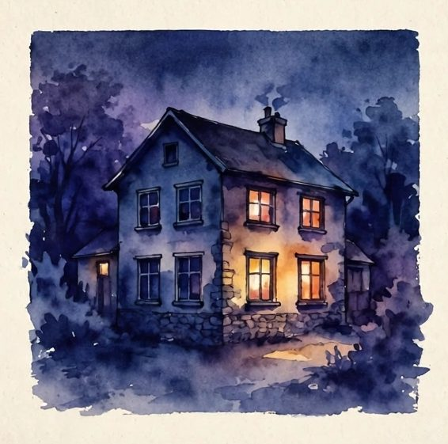
A house at dusk, half its windows lit, half dark and unapologetic.
Every house has rooms the tour does not show. Behind the parlour with its good chairs there is a corridor the guests never walk, a cellar nobody mentions at dinner, a drawer that stays shut because it has always stayed shut. This house begins with a plain admission: a person is built the same way. Beside the self that answers the door there are other selves, unlit and unintroduced, and they are not intruders. They are residents. They were here before the tour was ever arranged, and they will be here after the last guest has been waved off the step.
The register of this house keeps no separate list for them, because they are not a separate matter. The hidden sides pay their rent in strange coin: a sudden tearfulness at a small kindness, a flash of envy at a friend's good news, a private joy so unglamorous it has never once been mentioned aloud. None of it is announced. All of it is lived. The house does not consider a room less real for having no window onto the street, nor a self less genuine for keeping some of its furniture in the quieter rooms at the back.
So the tour that follows is not an exposé and not a confession. It is a walk taken slowly, lamp in hand, by the person who lives here. The walk will take the rest of the house, hall by hall, and nothing on the route will be treated as scandal. The doctrine of the house can be said once, plainly, and then left to do its work in the halls ahead: hidden is not the same as false, and a side of a person is not a secret crime.
2Every House Has Back Rooms
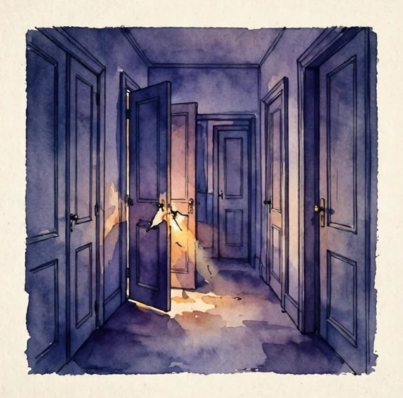
A corridor behind the parlour, quieter than the house admits.
Architects draw them without embarrassment: the scullery behind the kitchen, the box room under the eaves, the passage that exists only so the house can function without being watched doing it. Back rooms are not a design flaw. They are how any dwelling, and any person, manages to be more than a façade. The front of the house is where life is presented; the back is where life is actually kept, repaired, and fed. A house that tried to live entirely in its parlour would starve in very good taste.
A person who claims to have no back rooms is usually describing a house they have not finished exploring. The rooms are there regardless — the temper that only comes out in traffic, the grief that only visits at night, the silliness reserved for one trusted witness. Refusing to draw them on the plan does not demolish them. It merely means their doors open inward, quietly, at hours when nobody official is counting. The plumbing does not ask whether it appears on the brochure; it simply continues, out of sight, to serve the whole building.
The keeper of this house walks the back rooms on a regular round, not to renovate them but to know them. That is the whole policy, and it is enough. A room known is a room that behaves; a room denied is the one that floods. The back of the house is not the shame of the house. Depth is not a defect in a building, or in the person who has arranged their whole life around pretending to have none. It is its depth, its storage, its ballast — the reason the front rooms can stand upright at all, in all weathers, year after year.
3The Tour Does Not Show Everything
Every guided tour is an act of editing. The guide walks backward, speaks warmly, and passes certain doors with the smooth step of someone who has decided, long ago, that this door is not part of the visit. Visitors go home believing they have seen the house. They have seen a route through the house, which is a different and much smaller thing, and the guide knows it, and the house knows it too. Neither of them is lying. A route is simply what a visit can hold, and a house is under no obligation to be the size of a visit.
People conduct such tours of themselves daily — at work, at family tables, across the bright counter of a first meeting. It is not dishonesty. It is hospitality, and it has its courtesies: the guest is not owed the cellar, and the cellar is not improved by an audience. A tour is a gift of the lit rooms, freely given. What it withholds is not a lie about what it shows, any more than a menu is a lie about the kitchen. It is a selection, and selection is the beginning of all manners.
Only one visitor is ever granted the full plan, and that visitor is the person who lives here — and even they tend to hurry past the same doors the guide skips, out of a loyalty to the route that nobody actually requires of them. This house suggests a slower courtesy toward oneself. The tour can stay as it is, gracious and partial. But someone should walk the whole building now and then, unhurried, just to confirm that everything behind the closed doors is, in fact, still theirs.
4A Side Is Not a Secret Crime
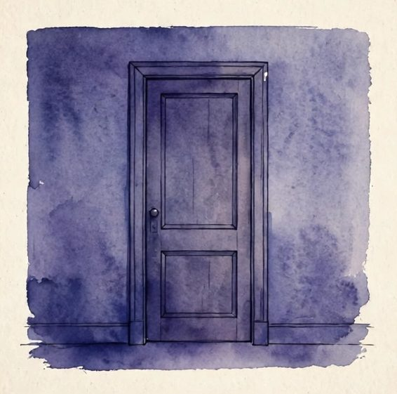
A locked drawer, opened in daylight, holding nothing worse than letters.
There is a suspicion, absorbed early and rarely examined, that whatever is hidden in a person must be hidden because it is guilty. The locked drawer is imagined to hold evidence. The closed door is imagined to conceal a crime scene. Under this suspicion the back rooms are lived in like a fugitive — quietly, apologetically, with the curtains drawn — and the resident pays for the arrangement in a constant, low-grade shame that has no actual charge attached to it. Nobody has filed the indictment. The resident simply behaves as though one might be coming, any year now, and keeps the lights low in the meantime.
The house wishes to correct the record. A side is hidden for many reasons, most of them innocent: it is tender, it is unfinished, it is unfashionable, it is simply nobody's business. The song sung only in the car is not a crime. The ambition too embarrassing to say aloud is not a crime. The grief that prefers privacy is not concealing itself; it is dressing appropriately for its own weather. Privacy is a form of housekeeping, not a form of evasion, and the two should never have been issued the same uniform.
A side becomes a burden not when it is hidden but when it is treated as contraband by its own owner. What the keeper finds, walking these rooms year after year, is mostly ordinary humanity stored without labels: appetites, sorrows, vanities, devotions. Nothing in the inventory requires a pardon. Shame, like damp, thrives in exactly the conditions secrecy maintains, and fades in the ordinary weather of being accurately known. It requires something much simpler and much rarer — an accurate description, given without flinching, in the house's own hand, in the house's own register.
5The Rooms Without Windows
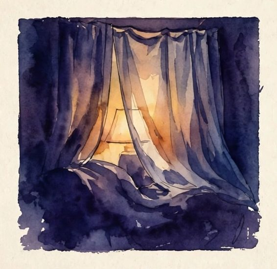
An interior room at noon, lit by a lamp it keeps for itself.
Some rooms in a house never see the sun directly, and the old builders had a phrase for them: borrowed light. Whatever brightness they have arrives secondhand, through a doorway left open or a fanlight above a door. The self has rooms like this — feelings that have never been displayed to anyone, not even clearly to their owner, existing in a permanent soft twilight of almost-knowing. They are not locked. Nothing about them is forbidden. They have simply never once been stood in, deliberately, at noon.
These are the hardest rooms to describe because they have never been looked at steadily. A person may carry, for decades, an unexamined sorrow about a parent, an unadmitted longing for a completely different life, a tenderness toward someone long gone — all of it functioning, all of it dim. The rooms are not dark because they are dreadful. They are dark because no occasion ever required a window to be cut, and so none was. Life is busy, the lit rooms are demanding, and an interior chamber can wait fifty years for a visit that remains, technically, always possible.
The house does not prescribe renovations. Some windowless rooms are best entered with a lamp and left exactly as found; the point is the entering, not the improvement. A person who has stood once, quietly, in their own interior rooms is less startled by them afterward. The twilight remains twilight. The keeper makes the round with the lamp at irregular hours, so that no interior room goes a whole lifetime unvisited. But it becomes familiar twilight — the kind you can cross in the dark without putting a hand out for the wall, because you finally know where the furniture stands.
6What "Hidden" Actually Means
The word hidden does a great deal of unfair work. It suggests burial, concealment, a thing dug down in the night with a spade and a guilty conscience. But most hidden sides are not buried at all. They are simply not exhibited — the way a garden behind a wall is not a secret, only not on the street. Hidden, in this house, is a statement about audience, not about honesty. A side can be entirely known to its owner and entirely unshown to the world, and be guilty of nothing at all.
It helps to separate the three tenants the word usually confuses. There is the private: known, chosen, kept — the self's legitimate property, held the way a letter is held, without drama. There is the unexamined: present but unvisited, the windowless rooms of the previous pages. And there is the disowned: the sides a person refuses to sign for, which get their own hall further along this corridor. Only the third kind causes serious trouble in a house, and even it is more exile than criminal — a tenant whose name is missing from the lease, not from the building.
When the register writes the word hidden, then, it means something almost domestic: not offered to view. The sun does not accuse the far side of the moon of secrecy. A house does not apologise for having a north wall. The street is owed a citizen, a neighbour, a front of the house in good repair; it is not owed the entire floor plan. A person may hold whole provinces of themselves in reserve and remain, in every sense that matters, an honest citizen of their own life — solvent, accounted for, and under no obligation to conduct tours.
7The Self in the Front of the House
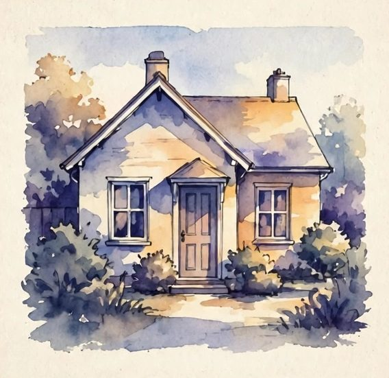
The parlour at its best hour, chairs arranged, light arranged too.
The front-of-house self deserves a fair hearing before the tour goes any deeper, because it is easy, in an excursion like this one, to start treating it as a fraud. It is not. The self that greets, hosts, works, and answers correspondence is a genuine resident — trained, presentable, and often kind. It keeps the appointments the whole house depends on. It signs the forms, remembers the names, produces the required warmth at the required hours. Without it, the back rooms would have no house to be at the back of.
Its only limitation is that it is edited by daylight and company. The parlour self knows the good stories and tells them well; it has opinions it can defend and feelings it can name in company. What it cannot do is represent the whole estate. It is a reception room with excellent manners being mistaken, by visitors and occasionally by the owner, for the entire building and everything stored in it. The mistake is flattering to the parlour and expensive for the house, which must then conduct its real business in whispers, after hours.
The house holds no grudge against its own front. The error is never that the parlour exists; the error is forgetting the corridor behind it. There is also more humour in the front rooms once the pressure is off, since a parlour that need not contain everything can afford to enjoy what it does contain. A person who remembers their own depth does not perform less well in the front rooms — they perform more cheaply, with less strain, because the front self is no longer required to smuggle the whole truth of the house into every conversation, disguised as small talk.
8Doors Kept Closed out of Habit
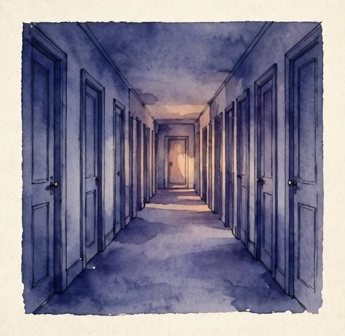
A door painted shut by years, its handle bright from early use.
Not every closed door in the house was ever locked by a decision. Most were simply closed one evening — because the room was not needed, because the season changed, because company came — and then closed again the next evening, and within a year the closing had become the custom of the house. Habit is the quietest of all keepers. It asks no reasons and accepts none; it merely repeats what was done last time, and it can keep a door shut for thirty years on the strength of a single ordinary evening.
The sides of a person close this way. The one who used to draw, dance, write verses, argue theology until midnight — these were not renounced in some dramatic scene of self-betrayal. They were postponed, then postponed again, and the door swung to behind them with the softest possible click. Years later the resident may walk past that door daily without hearing anything from the other side, and mistake the silence for absence. But silence behind a habit-closed door means only that nobody has knocked lately. Rooms, unlike tenants, do not move out when they are ignored.
The house keeps a small hope filed under this heading: habit, unlike conviction, has no arguments. A door closed by habit can be opened by habit's opposite — a single unceremonious push, on an ordinary afternoon, without permission or occasion. What is behind it may have dust on it. Dust is not death. The keeper, making the evening round, has taken lately to touching the handles of the habit-closed doors, just to remind the house that they turn. Several of the most alive rooms in any long life are simply the ones somebody finally remembered to stop walking past.
9Nobody Is Only Their Lit Side
It is a natural mistake, standing in a lit room, to believe the light is the whole property. Other people make this mistake about us — they know the colleague, the parent, the friend at the table — and we conspire in it, because the lit side is the side with references. But the arithmetic of a person has never once balanced on the visible figures alone. Everyone who has ever startled themselves, in solitude, with their own unedited thought knows the ledger continues past the lamplight, in both directions: better than the display, and worse, and stranger.
The unlit side is not a truer self hiding behind a false one; the house rejects that melodrama in both directions. The lit side is real. The unlit side is real. They are the same property under different weather. What changes between them is not authenticity but audience and ease — the difference between the voice used for the room and the voice used for the road home, both of them unmistakably one's own. A house is not lying about its parlour because it also has a cellar. It is simply a house, in full, as houses are.
To remember this, in oneself, is restful. To remember it in others is a form of justice. The neighbour, the rival, the difficult relative: each is also a house with back rooms, keeping sides that would surprise the street, hoarding tendernesses and pettinesses indistinguishable, on inspection, from one's own. It is, in the end, simply the recognition that every address on the street conceals the same architecture, and always has. Nobody is only their lit side — not the polished, not the difficult, and not, on the evidence of any honest inventory, oneself.
10The Moon Has a Far Side Too
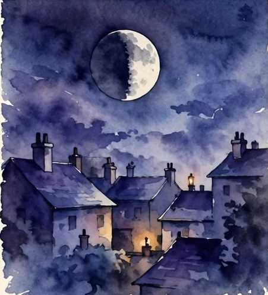
The moon over the roof, one face turned politely away.
The moon is the house's favourite exhibit in this argument, because nobody accuses it of anything. It keeps one face toward the world and one face permanently turned away, and astronomy, that driest of sciences, records the arrangement without a whisper of reproach. The far side is not the dark side, in fact — it gets its full share of sun. It is simply never seen from here. Unwitnessed is a condition, not a character flaw, and the moon has never once been asked to apologise for its geometry.
A person likewise has a far side: the thoughts that would not survive being said at the table, the dreams that belong to no biography, the whole weather system of a private imagination. It faces away not out of shame but out of geometry. There is no vantage point from which another person can see it, and only a limited one from which its owner can. Even the keeper's lamp, in these rooms, shows mostly shapes. The rest is inference, patience, and the knowledge that something can be entirely real while remaining permanently out of view.
The house finds comfort in the comparison and recommends it. What is far-side in a person is not waiting to be exposed; it is doing what far sides do — existing fully, lit in its own time, turning slowly. Some of it will rotate into view across a lifetime, as friendships deepen and habits change. Some of it never will. The moon is not incomplete for this. There are photographs of the far side now, taken by machines, and they changed nothing essential: it looks like the rest of the moon, only unobserved. Neither, the register rules, is anyone else.
11Hidden Is Not the Same as False
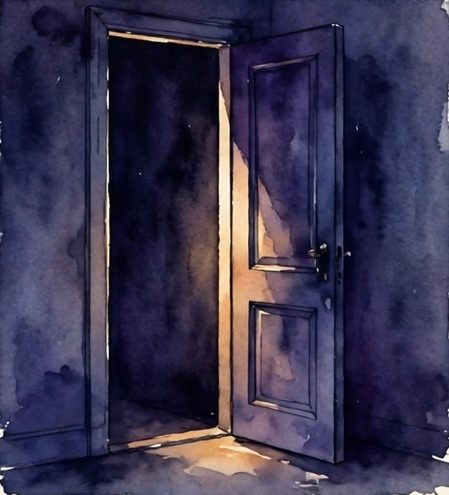
An unopened letter on the desk: unread, not untrue.
There is a modern superstition that whatever is not displayed is not real — that a feeling must be posted to have occurred, a talent performed to exist, a self narrated to be believed. The house, being older than the superstition, dissents. The unopened letter on the desk is unread, not untrue. The unwitnessed kindness happened, in full, at its actual hour. The side of a person that no audience has ever applauded is as factual as the side with the testimonials, and considerably less interested in being audited.
Falsehood requires an intention to deceive, and most hidden sides deceive no one; they simply decline to attend. The singer who sings only alone is not pretending to be a singer in secret, nor pretending not to be one in public. She is a person with a province that has no embassy. To call that false is to confuse privacy with perjury, and the confusion makes poor law and worse friendship. It also makes, in time, a very exhausting interior life, in which every unshown feeling is prosecuted as a lie the self is telling the street.
What is hidden may, in time, be shown — to one person, on one evening, in one sentence that costs more than it looks. Or it may stay where it is, adequately known to the only authority with jurisdiction. Either way, its reality was never on trial. The register closes the first hall on this entry: a thing does not become true when it is exhibited. It was true in the back room, in the dark, all along, and the exhibition adds nothing but witnesses.
12The Door to the Back of the House
Every house on this street has it: a plain door at the end of the corridor that visitors pass on their way to somewhere brighter. It is neither grand nor forbidding. It has the same handle as the other doors, and the same coat of paint, perhaps one season older. The only thing distinguishing it is that nobody has opened it in company for years, and so an air of significance has gathered around it out of all proportion to its actual contents, which are mostly furniture and weather — the stored evidence of a life being lived at full size.
This hall ends at that door deliberately, because the rest of the house lies behind it. The halls ahead deal with the self nobody meets, the tenants nobody claims, the tenderness nobody budgets for, and the edition of a person that only exists at three in the morning. None of it is approached with a crowbar. The keeper's whole method is to open doors the way one opens them in one's own home: without ceremony, without announcement, and without apologising to the corridor for the errand.
The register offers one piece of practical counsel for the threshold. Do not expect a revelation; expectation is what makes back rooms disappointing and then, unfairly, suspect again. Expect a house — the rest of the same house, continuous with the parlour, smelling of the same dust and rain. The door opens. The hinge, it should be said, is in good order; doors that are feared are so often merely doors that have not been tried. That is the entire event, and for the purposes of an honest life, it is entirely enough.
13The Self Nobody Meets
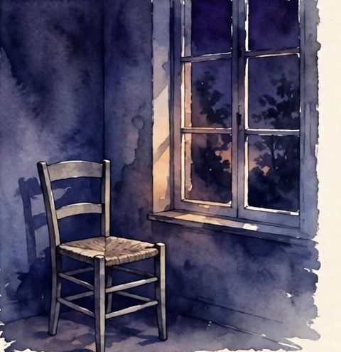
An empty chair by a window, occupied daily, seen by no one.
Somewhere behind the social self there is a resident whom no introduction has ever reached: the self that exists only in solitude, with its own posture, its own tempo, its own untranslatable humour. Friends of forty years have not met this person. Family has not, though family has come closest and been politely deflected at the threshold for decades. He keeps different hours from the self that answers the door, eats differently, thinks in longer sentences, and is under no obligation to be interesting — which may be exactly why he is.
This self is not a performance withheld; it is what remains when performance becomes unnecessary. Alone, the face rests. The voice drops into its home register. Opinions stop rehearsing their defences and simply sit down. What is left is sometimes startlingly plain — a creature that likes what it likes, fears what it fears, and spends long stretches thinking about nothing of any importance whatsoever, with an air of deep, unbothered competence. Whole afternoons of a life are spent in this resident's company and recorded in no diary anywhere.
The house regards this resident as the landlord, in a sense: the others are tenants of his quiet. He signs nothing, attends nothing, and cannot be summoned for inspection, even by his owner, on demand — he is only ever met by accident, in the moment before one remembers being alone. Visitors occasionally sense him, the way one senses a presence in a house that has gone quiet, and they lower their voices without knowing why. But everything the front rooms display was decided, somewhere behind him, in his unobserved good time, and the wise keeper treats his privacy as the house's founding charter.
14Alone Is a Different Person
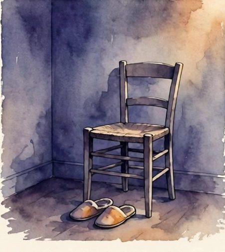
A coat on one hook, a hat on another, and nobody performing for either.
Watch any person cross the threshold of their own front door at the end of the day and a small, complete revolution takes place. Shoulders descend. The expression used for the world is hung up with the coat. Within minutes, someone measurably different is moving about the rooms — slower or quicker, sillier or graver, but changed in a way no audience will ever be invited to verify. Alone is not the same person with the volume lowered. Alone is a different person, with different appetites and a different relationship to time.
The difference is not hypocrisy; it is load. Company is a weight a self carries gracefully, the way a table carries a cloth and settings — beautifully, and at a cost in effort that only becomes visible when the table is cleared. The alone self is the table unburdened: plain wood, old scars, no arrangement. It is not better than the set table. It is simply what the set table rests on, and it deserves to be known on its own terms rather than treated as the social self with the guests removed.
People who are never alone are, in this house's ledger, missing a member of their own household. And people who are only ever alone have the opposite gap: a front room going gently to dust, its chairs unused, its welcome unpractised. The healthy house keeps visiting hours in both directions. Neither self is the disguise of the other; they are shifts in the same household, and the house runs best when both are on speaking terms. The alone self, met regularly and without alarm, becomes less of a stranger — and the social self, returning to it each evening, less of a performance and more of a craft.
15The Unguarded Hour
There is an hour in most days when the guard comes down — often in the early evening, sometimes in the blue margin before sleep — and the self stops editing itself for an audience that is not even present. Thoughts arrive unformatted. Old memories put their feet up. A person in the unguarded hour may laugh once, aloud, at something from twenty years ago, or sit in a sudden and complete sorrow about nothing current, like weather blowing through from another county. The hour is unproductive, unphotogenic, and absolutely load-bearing.
Nothing in this hour is presentable, and that is its function. A self that is guarded at all times is a house with the shutters nailed; the unguarded hour is when the interior gets its air. What surfaces there — the unflattering wish, the unfashionable grief, the ambition too naked to dress — is the raw correspondence of the place, not yet sorted into what may be said. The keeper reads it without answering immediately. Most of it files itself by morning. The remainder is the most reliable intelligence the house receives all day.
The house advises making peace with this hour rather than scheduling over it, which is the modern instinct. An unguarded hour a day keeps the back rooms honest. Whatever rises there is information, delivered by the only correspondent who knows everything and reports without tact. One need not act on any of it. What the hour must never become is another appointment defended by effort, since its entire value lies in being the one hour effort is stood down. One need only let it be seen, briefly and without judgement, by the management.
The Back Room Desk
One desk receives all correspondence for this house — questions, corrections, greetings, and word of rooms you are thinking of opening. It is read in the order it arrives.
16The Voice You Use Indoors
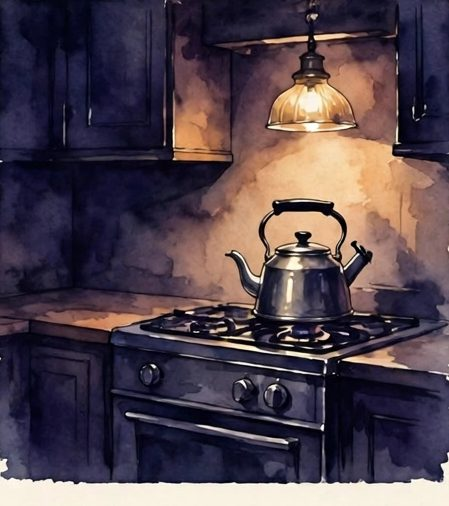
A low voice in a lamplit room, saying the unedited version.
Everyone has two voices at least: the one carried out of the house, tuned for distance and company, and the one used indoors — lower, slower, unembarrassed by its own hesitations. The indoor voice says the unedited sentence. It tries out opinions it would never defend in public, voices complaints too petty for the record, and practices, in a murmur, the things that may one day need saying aloud to actual people. It also says, now and then, the thing the outdoor voice has been politely circling for a year.
Children know this voice in their parents and find it either comforting or alarming, depending on the weather of the house. Partners know it in each other; it is one of the privileges of long acquaintance to be addressed in it, a kind of citizenship in the back rooms. But its primary listener is its owner. The indoor voice is how a self talks to itself when it is not performing sanity for the neighbours — candid, wandering, frequently unfair, occasionally wiser than anything said in daylight, and utterly uninterested in being quoted.
The register notes that a person's indoor voice is the surest census of the back rooms. What it returns to, night after night — the old grievance, the new hope, the name it still says with an ache — is the true occupancy list of the house. The public voice gives speeches. Strangers hear only the outdoor voice and form their certainties from it, which is why the street's opinion of a person is always, at best, a partial transcript. The indoor voice keeps the register, and it writes in pencil, in the margins, in the hand nobody else can read, and it never, ever lies about the totals.
17Hobbies Nobody Claps For
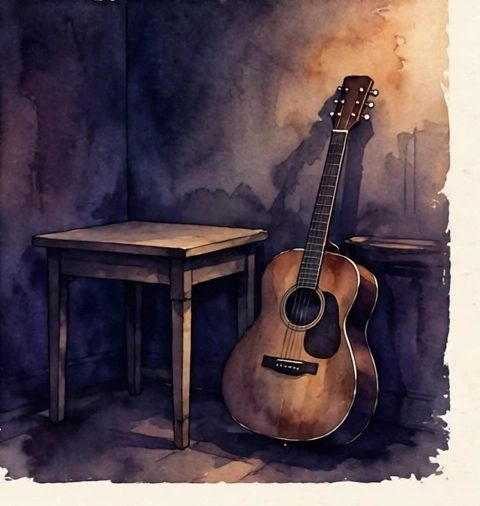
A workbench of small, useless, beloved projects under one lamp.
In the back rooms of almost every house there is a workbench of pursuits that have never earned a word of applause: the model railway in the attic of a formidable executive, the verses kept in a drawer by a surgeon, the bird lists, the restored radios, the thousand-piece jigsaws assembled by the permanently unimpressed. These hobbies are not failed careers. They are successful privacies — the part of a life that has been deliberately kept off every stage, including the small stage of being thought interesting by one's acquaintances.
Applause changes a thing. The moment a pursuit acquires an audience it begins, however slightly, to perform: it watches itself being watched, keeps an eye on the notices, and something unselfconscious goes out of the room. The unclapped hobby is preserved from this by its obscurity. Nobody will ever review the jigsaw. The radio will not trend. What remains is the pure mechanics of pleasure, unpolluted by the question of whether it is going well in anyone's estimation but the practitioner's — a standard both lower and higher than any critic's.
The house keeps a fond eye on these benches because they are where a person is most legibly themselves: taste without strategy, effort without ambition, devotion without witness. If you want to know who lives in a house, do not read their public works. The keeper, passing the bench late, sometimes stops to admire the workmanship of a joy that has never once asked to be admired. Find the thing they persist at for no reason the street would accept, and you have found the resident, at home, off duty, entirely and unmistakably real.
18The Singer Nobody Hears
She sings in the car, in the shower, over the washing-up — never at the party, never on request, and would deny the whole matter with genuine alarm if accused of being musical. Every neighbourhood has several such singers, and every office, and most families, though membership in the choir is never acknowledged by its members. The voice is not always good. That is entirely beside the point. It is the sound a self makes when it has forgotten, briefly and completely, to be a presentation, and it may be the least edited sound the house produces.
Singing nobody hears is one of the oldest rooms in the house, and one of the least defensible to the modern auditor: it produces nothing, improves nothing, cannot be listed among anyone's achievements. Its persistence across all circumstances — people sing in poorhouses and in palaces, in grief and in convalescence, alone at the wheel on roads no one will ever ask about — suggests it is not decoration but plumbing. Something in a person needs to come out in melody at regular intervals, and the back rooms, unobserved, provide the acoustics.
The house does not propose that every private singer be dragged to a microphone; the world has enough microphones and the singing would change under them. It proposes only that the singer be recognised, by the one person who can hear her, as evidence. A self that still sings alone is not extinguished, whatever the front rooms report about the season. The register notes, for the file, that the houses with a private singer in them tend to be the houses still standing after hard winters. The register enters it as a sign of life, in good standing, and passes on.
19Talking to Yourself, Honestly
A soliloquy in the pantry, delivered to the shelves, received without comment.
The solitary monologue is the back room's native literature. Half the population conducts it aloud — in kitchens, in cars, on walks misread by passersby as phone calls — and the other half conducts it silently and denies the whole practice. Either way, it is the one conversation in a life where both parties know everything: every excuse arrives pre-audited, every exaggeration pre-discounted. Honesty, in this room, is not a virtue achieved after effort. It is the default condition, because lying to oneself in one's own voice, alone, is strangely hard to sustain for more than a sentence.
What is said there would scandalise no one, mostly. It is the running commentary of a self upon itself: the rehearsal of tomorrow's difficult conversation, the appeal against yesterday's, the plain statement of wanting something it would be embarrassing to want in company. Now and then it produces a sentence of real weight — the thing admitted at the sink that changes the year. Such sentences are almost never first spoken in public. They are workshopped here, in the pantry, to the shelves, long before they are risked in any lit room.
The keeper's counsel is simply to keep the channel open and not to tidy it. People who stop talking to themselves do not become saner; they become less informed. The monologue is the house's internal post, delivering news the front rooms would never print. The shelves, for their part, have heard everything over the years and kept every confidence, which is more than can be said for most parlours. Read it the way the keeper reads the register — daily, without alarm, and with respect for the correspondent, who is, after all, the only reporter stationed permanently inside the story.
20The Drawer of Unposted Letters
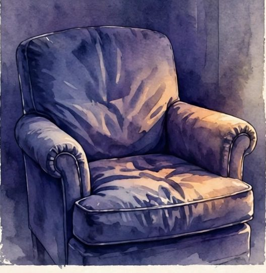
A drawer of envelopes, stamped with everything except postage.
In the desk of nearly every reflective life there is a drawer — literal or otherwise — of letters written and never sent. Apologies drafted at midnight and softened by morning. Resignations composed in fury and retired in prudence. Declarations that missed their season, thank-you notes to the dead, explanations addressed to people who have forgotten the offence entirely. The drawer is full, in most houses, and its contents are among the most honest documents the resident has ever produced, precisely because no audience was ever expected to grade them.
An unposted letter is not a failed letter. It did the first and hardest part of its work in the writing: it found the words, which is where these matters usually stall for decades. Many of them were never truly meant for their addressee at all — they were meant for the writer, who needed the sentence out of the body and onto paper before it could be examined. The drawer is not a dead-letter office. It is a workshop where the unsayable gets built, inspected, revised, and often, wisely, retired with its work complete.
The house does not advise a general emptying of the drawer; some of those letters would do real damage at their destinations, and their restraint is their virtue. It advises only that the drawer be acknowledged as part of the estate. A person is partly made of what they refrained from sending. The restraint is in the register too, in the keeper's hand: written, considered, kept. There are residents who periodically reread the drawer the way others reread diaries, measuring who they have become against who they nearly announced themselves to be. A complete sentence, with the posting left off — deliberately, and entirely at peace.
21What You Do When the Visit Ends
The truest census of a house is taken ten minutes after the guests leave. The host stands in the sudden quiet with a particular expression no visitor has ever seen — relief, fatigue, and a private satisfaction all arriving at once — and begins, without thinking, the small rituals of repossession: the cushions shaken back into disorder, the good shoes exchanged for the honest ones, the kettle filled at last without asking anyone anything. The rooms themselves seem to exhale. This half-hour belongs to a self that hospitality borrows and always, punctually, returns.
What a person does then is wonderfully diagnostic. Some talk to the empty rooms, reviewing the evening like officials reviewing a parade. Some eat standing up at the counter, the food they actually like, in the manner they actually like it, with a fork and no ceremony. Some sit down in the best chair — the one no guest was steered toward, out of some unexamined instinct of preservation — and read the book that was hidden by more presentable company. The visit-self and the after-visit self are both genuine; the second is simply unbilled, and therefore unedited.
The house draws no scandal from the contrast. A visit is a performance in the honorable sense, and its ending restores the performer to their native condition, the way a tide restores a beach. If the after-visit rituals seem humble — slippers, leftovers, silence, a window opened to the night air — that is because they are the load-bearing pleasures, the ones the whole social architecture exists, in part, to be returned to. The parlour is for the world. The ten minutes after are for the resident.
22The Self That Doesn't Photograph
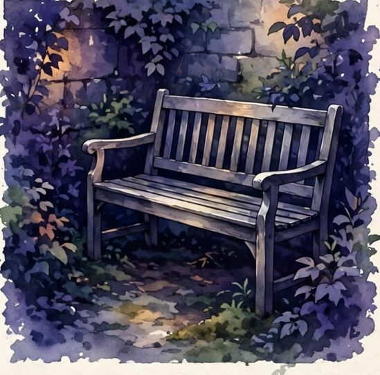
A camera on the shelf, and the best of the day happening off-frame.
Cameras are diligent but narrow correspondents. They report the occasions, the gatherings, the lit rooms with everyone arranged in them — and they miss, with perfect consistency, the self that this hall is about: the one awake before the house stirs, the one mid-thought at the stove, the one whose best expressions occur in solitude and are witnessed only by furniture. That self doesn't photograph. It isn't hiding from the lens. It simply lives at hours and angles the lens never attends, doing the unposed majority of a life.
The result is a curious gap in the family archive. Strangers studying the photographs would construct a person — sociable, arranged, frequently holding a drink near a cake — and the construction would be accurate and wrong, like a map of a coastline that omits the interior. The resident knows the interior exists: the long unrecorded stretches of reading, brooding, puttering, mending, delighting. They constitute most of the life and almost none of the evidence, and the disproportion surprises people only when they stop, usually late, to count it.
The house suggests the gap be left unfilled. Not everything unphotographed is a loss; some of it is a preservation. The self that doesn't photograph keeps its unobserved freedom precisely because no record is being compiled of it — no one, including its owner, is curating it. Let the albums have the parlour. Some countries of a life are simply not for export, and their remaining unrecorded is not a gap in the archive but a condition of their climate. The back rooms, unlit by any flash, go on being the larger country: unmapped, unshared, and, the register notes, under no obligation whatsoever to become content.
23Private Joys, Kept Private
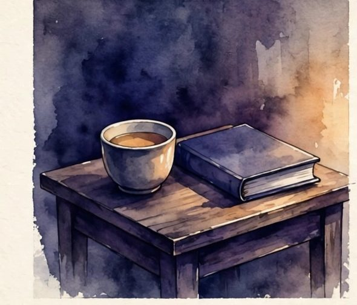
A small cake, eaten alone, with ceremony and without witnesses.
Some pleasures are shared by nature and improved by company; others are of a constitution so quiet that company would not exactly ruin them but would change their species. The first coffee before anyone is awake. The particular song, the particular chapter, the walk on the unremarkable street where the light does something at a certain hour that it does nowhere else. These are private joys, and a great many people keep them private with the instinctive care of someone carrying water in cupped hands across a room.
They are kept private for good reasons. Explained, a private joy often sounds like nothing — that is the recurring embarrassment of trying — and the flat description then stands awkwardly between the owner and the thing itself. Worse, shared joys acquire witnesses, and witnesses acquire opinions, and a pleasure that was once a refuge becomes one more room with visitors in it, asking questions. The keeper understands the arithmetic: privacy is not the hiding of these joys from shame. It is their climate control, and it keeps them alive for decades.
The register therefore declines to itemise them, even here, even in general terms beyond this page. It is enough to record that they exist in every examined life, that they are among the sturdiest reasons people give, privately, for enduring the difficult seasons — and that a person is entitled to a few of them entirely off the record, unshared, unimproved, unexplained. The street, told about such a joy in plain terms, would nod politely and miss it entirely, which is the whole reason for the carrying. The house keeps its smallest lamp lit for exactly such a joy, and does not print its name on the tour.
24The Room Where You Are Nobody's Example
To be somebody's example is an honor with a costume attached. Parents know it, and eldest children, and anyone whose job or history has made them a reference point for how things are done around here. The costume fits well enough in public and is worn, mostly, with grace. But somewhere in the house there must be a room where it can be taken off — where a person is nobody's model, nobody's cautionary tale, nobody's proof of anything, and may be mediocre, undecided, and unwise in complete and restorative privacy.
That room is not a place of shameful collapse; it is a place of suspended office. In it, the example may hold opinions they are still testing, grieve inarticulately, enjoy low pleasures without improving them, and fail at small things without the failure being entered as evidence against the public record. Every durable public self is secretly underwritten by such a room. The ones who lack it — who must exemplify at all hours, even alone, even at midnight — are the ones who eventually break in a way that surprises everyone except this house.
The keeper's position is that the room should be defended as fiercely as any in the building, and its door never apologized for. Being an example is a service rendered to others; being no one in particular, for an hour, is a service rendered to the only client who can never be replaced. The house closes this hall on the observation that the back rooms are not where a person hides from their life. An example that cannot rest becomes, in the end, an example mainly of exhaustion, which was never the lesson anyone intended to teach. They are where their life is kept possible.
25The Shelf of Disowned Things
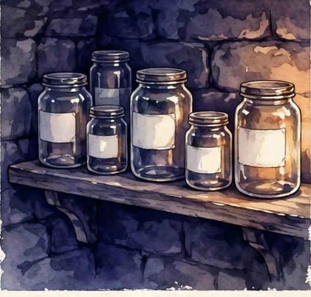
A high shelf of jars, each labelled in a hand that denies writing them.
Deeper in the house, past the merely private rooms, there is a shelf the keeper approaches with more care: the shelf of disowned things. Here stand the sides a person will not sign for — the envy, the spite, the small cowardices and large vanities — arranged in plain jars, each one unlabeled in every sense except that its owner, shown it, tends to say: that isn't mine. It is the only shelf in the building where the register and the resident openly disagree, and the disagreement has usually been running, unaudited, for years.
Disowning is an understandable housekeeping strategy. These are not the exhibits one shows the street, and there is a real sense in which a person disowns them precisely because they are trying to be better than their worst inventory. But the strategy has a cost that compounds quietly: what is disowned does not leave the house. It merely leaves the accounts. From off the books it conducts its business — the envy steering a friendship, the anger driving a decision — unaudited, unbudgeted, and therefore completely unsteerable.
This hall walks the shelf item by item, not to shame the householder but to restore the bookkeeping. The doctrine of the preceding halls holds even here, especially here: a side is not a secret crime, and a tenant is not evicted by being named — but a tenant who is named can at least be negotiated with. The keeper's whole proposal is that the jars be brought down, looked at in ordinary light, and entered in the register: still not exhibited to the street, but owned. Ownership is the beginning of every negotiation a self ever conducts.
26Envy, the Uninvited Tenant
A chair pulled up to someone else's feast, through the window, nightly.
Envy never applies for lodgings and never lacks them. It arrives with the news of a friend's good fortune — the promotion, the marriage, the effortless success in the very field where one has been quietly laboring for years — and it takes the chair by the window, facing the feast. It is the most disowned of all tenants because it contradicts the story everyone prefers: that we are pleased, purely and immediately, by the happiness of those we love. Sometimes we are. Sometimes the tenant gets there first, and sits down, and orders for the table.
The keeper has audited many houses on this point and reports that envy is rarely about the thing envied. It is a measurement error wearing a moral costume: it compares one's own back rooms — known in all their clutter — with another person's parlour, arranged for viewing. Nobody envies a whole life, cellars included. They envy a window display. The feeling, examined in decent light, usually dissolves into something more honest and far more useful: a plain statement of what one wants, and has not yet admitted, even indoors, to wanting.
Which is why the house keeps envy on the register rather than casting it out with speeches. Admitted, it becomes a surveyor: it points, with embarrassing accuracy, at the unlived portions of one's own estate. Unadmitted, it curdles into the far uglier trades of belittling and sabotage. The tenant is not lovable, and the register does not pretend otherwise. But seated in the light, giving its evidence, it does considerably less damage than it ever did locked in the dark, rattling the windows of other people's happiness.
27Anger, Kept in the Cellar
Anger is stored in most houses the way wine is stored in serious ones: in the cellar, in the cool and dark, put down early and hoped about vaguely. The storage is not the problem. A cellar is exactly where a strong vintage belongs while it settles — anger laid down in the first heat of an offence often matures into something clearer and more usable: a boundary, a decision, occasionally even a kind of gratitude. The problem is the cellar that is never visited, where the barrels multiply in the dark and the keeper, if one exists, has long since lost the inventory.
Unvisited anger does not stay in its barrels. It finds the house's plumbing. It comes up in the voice used with the wrong person on the wrong day; it flavours judgments that believe themselves perfectly rational; it ages, in some houses, into a permanent atmospheric bitterness that the owner mistakes for their personality and everyone else mistakes for the climate. The register's finding on the matter is blunt: anger kept is anger compounded, and the interest on the account is always charged, without exception, to the keeper of the house.
The house therefore includes the cellar on its rounds — not to empty it in a dramatic vintage-clearing, which usually only floods the parlour, but to know what is down there, barrel by barrel, and which of them have quietly turned to vinegar. Some angers, examined, are ready to be poured out as forgiveness. Some are ready to be served, at last, as an honest no. All of them do better in the lamplight than in the legend of the cellar door, which exaggerates everything it conceals.
28Pettiness, Admitted at Last
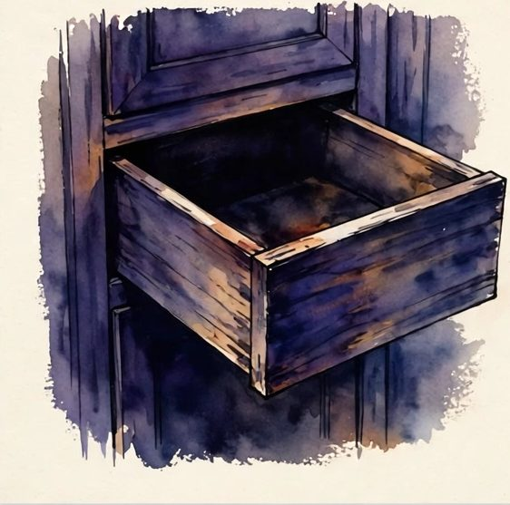
A ledger of small change, kept in a surprisingly careful hand.
Of all the tenants on the shelf, pettiness is the one most reluctant to be introduced, because it offends not our morals but our dignity. A person can confess to storms of anger and be thought passionate; confess to keeping score of tiny slights — the unreturned call weighted, the thank-you graded for warmth, the invitation audited for its lateness — and the confession itself feels small before it is even heard. And yet the ledger exists in most houses, kept in a surprisingly careful hand, updated faithfully in the small hours, by residents who would pass any examination in generosity.
Pettiness, inspected, is rarely a character so much as a symptom of scale. It flourishes where a person feels their larger accounts are not being honored: unthanked at the scale that matters, they begin auditing at the scale that doesn't. The scorekeeping is a protest, filed in the only currency available at the time. This does not make it noble. It makes it legible — and legible things can be addressed at their actual address, which is usually not the thank-you note, not the invitation, not the call, at all.
The keeper's remedy is unglamorous: admission, followed by proportion. The ledger, brought into the light, is mostly comic — and comedy is the one solvent pettiness cannot survive being dipped in. A person who can say, even only to the register, I am being small about this, has already become larger than the entry in question. The cold, attended to at its real window, usually stops needing to announce itself through the audit of everyone else's manners. The house files pettiness not among the crimes but among the draughts: a reliable sign that somewhere a window of recognition has been left open to the cold.
29The Cowardice Drawer
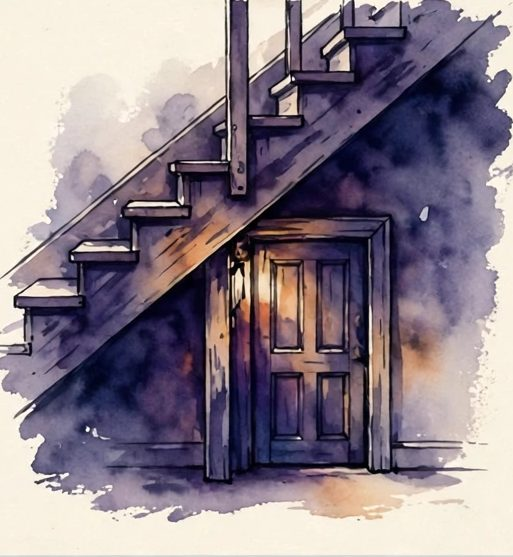
A drawer of undelivered speeches, each folded smaller than the last.
Every desk in the house has one: a drawer of occasions where the brave sentence was fully composed and never delivered. The objection not raised, the defense of a colleague left to a braver throat, the truth about one's own wishes swallowed at the exact moment the room was finally listening. The drawer is not hidden out of shame alone. It is kept the way battlefields are kept on maps — as the record of where the line actually ran, as opposed to where the memoirs, later, gallantly place it.
Cowardice is the word the drawer uses for itself, and the keeper allows it, with one correction of scale. Examined closely, most entries are not failures of courage before danger; they are failures of courage before embarrassment, awkwardness, the social weather of an ordinary Tuesday. The stakes were survivable and the retreat was real. Naming that plainly — I was afraid of a silence at a dinner table, and I let the silence choose for me — is more useful than either self-flagellation or the usual repainting of the scene in braver colors.
The drawer is not emptied by vows; everyone who has made midnight vows knows their exchange rate by morning. It is emptied, occasionally, by a single sent sentence — one occasion where the composed line actually leaves the desk and arrives. The house records those occasions without fanfare, in the same register as the rest. The drawer remains, as drawers do. A braver house is not built in a night; it is built the way this drawer was filled, one occasion at a time, and can be emptied the same way. Its authority, each year it is honestly audited, becomes a little easier for the resident to overrule.
30Jealousy's Small Print
Jealousy is envy's more contractual cousin, and it keeps its grievances in small print. Where envy wants what another has, jealousy fears losing what it believes is its own — a person's attention, a position in an arrangement, the first place in somebody's weather. It reads the contract of every relationship too closely, at unreasonable hours, looking for the clause under which it might one day be replaced, and finding, as close readers tend to, exactly the ambiguities it went in looking for. It is a tenant with a lamp, a magnifying glass, and unlimited time.
The keeper's audit finds jealousy, in most houses, to be less a measure of love than of imagination. It requires a novelist's gifts: whole scenes constructed from a delayed reply, entire betrayals staged on the evidence of a laugh heard through a wall. The tenant is not stupid — that is precisely the difficulty. It is talented, and its fictions are well made, and the only reliable test of them is the flat, unglamorous one of asking, in daylight, in plain words, the person actually involved.
None of which makes the feeling dismissible. Under the small print there is usually a real signature: something valued, something once lost, some old eviction that taught the heart to read contracts by lamplight ever after. The house does not mock the tenant for its history. Verification is unromantic, frequently disappointing to the tenant, and the single most effective maintenance the tender wing of the house receives. It merely insists the tenant's reports be verified before they are acted upon — a house rule that has saved more furniture, in more houses, than any lock ever fitted to any door.
The Back Room Desk
One desk receives all correspondence for this house — questions, corrections, greetings, and word of rooms you are thinking of opening. It is read in the order it arrives.
31The Side That Wants to Win Ugly
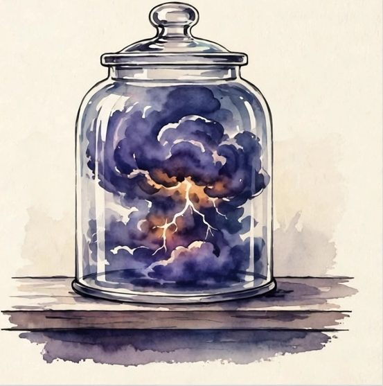
A chess game abandoned mid-gambit, the table still set for revenge.
Beneath the sporting self — the one that congratulates winners and means it, mostly — most houses shelter a competitor of a lower and more honest order: the side that does not want merely to win but to win ugly. It wants the rival's project to fail in committee, the old argument re-opened and finally taken on points, the success that arrives with an audience of exactly the people who doubted. It is not an attractive tenant. It is, on inspection, nearly universal, and it keeps regular office hours in every profession that has ever held a prize-giving.
The keeper distinguishes this tenant from ambition, which is a respectable resident with its own well-lit rooms. Ambition wants to build the thing. The win-ugly side wants the comparison — it would trade a larger success, unnoticed, for a smaller one staged before the right witnesses, and it keeps the seating plan of those witnesses updated with a secretary's care. Left disowned, it does quiet damage: it cannot enjoy a colleague's triumph, and so it goes through a career applauding with its hands while its back rooms keep a different, meaner set of books.
Admitted, the tenant loses much of its leverage, because its pleasures do not survive description. Said aloud — I would like him to fail, publicly, and slowly — the wish is revealed in its actual size, which is small, and its actual origin, which is usually an old defeat still arguing its appeal after all these years. The house does not evict this side; eviction notices are wasted on it. It seats it in the register, where its testimony is genuinely useful, and lets the better residents outvote it in session, year after year.
32Laziness, or Something Under It
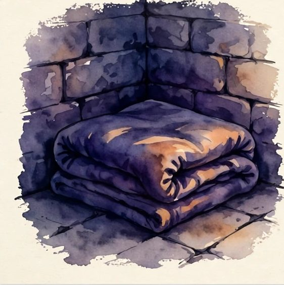
A chair by the fire, occupied past all reasonable excuse, happily.
The charge of laziness is filed against the self more often than any other, and it is the least examined charge in the register. It is brought by the industrious front rooms against some back-room resident who will not rise for the task at hand — the letter unwritten, the room untidied, the project eternally about to begin — and it is usually brought in the flattest possible terms: a defect of will, a leak in the character, to be deplored in bulk and remedied by louder exhortation from the parlour.
The keeper, visiting the accused, tends to find the file considerably more complicated. Underneath a great deal of so-called laziness sit other tenants doing the actual blocking: fear, who has calculated the cost of failing and quietly declined; grief, who has reallocated the house's entire energy budget without notifying the management; perfectionism, who will not let a thing be started unless it can be finished beautifully. And sometimes — the register insists on the fairness of this entry — simple, legitimate tiredness, which is not a vice at all but a message from the foundations.
None of this acquits the chair by the fire entirely; there are hours in every house that are merely, comfortably squandered, and the honest ledger should say so in plain ink. But a charge that names the wrong tenant cannot be answered, and answering it is the whole point. The house's practice is to ask, of any famous laziness, the more precise question — what, exactly, is underneath this one? The answer, delivered without theatrics, is usually the first useful thing said on the subject in years.
33The Fear That Runs the Basement
Below the cellar, in the part of the house even tours of honesty tend to skip, there is a basement, and in most houses a single tenant has held its lease for decades: fear. Not the clean fear of actual dangers, which is a respectable alarm system and earns its keep, but the old resident kind — the fear of being found ordinary, of being left, of having chosen wrongly at some unmarked junction years ago. It tends the boiler. Half the house's heat, on close inspection, is generated by its tireless and mostly unnecessary labor.
The basement fear is rarely met directly, because its work is done through intermediaries. It sends up the ambition that cannot rest, the courtesy that cannot say no, the savings that cannot be enjoyed, the apologies issued in advance of any offence. From the parlour, these look like virtues or habits, and some of them pass for both. From the basement stairs, they are recognisable as deliveries — the upper house dressing itself, every day, against a catastrophe the basement has been predicting, on no recent evidence whatsoever, since approximately childhood.
The keeper does not propose evicting the tenant; it knows the property too well, and a house without any fear at all is a house with the alarm cut and the stairs unlit. The proposal is an introduction. A fear that has been visited, sized, and spoken to in plain sentences loses its favourite instrument, which is scale. Most basement fears, seen at their actual dimensions, are old and tired and considerably smaller than their heating bills suggest. The boiler room, once lit and entered, is mostly a room.
34Vanity in a Plain Coat
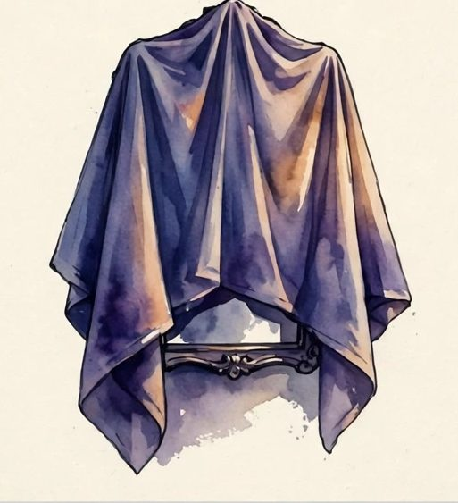
A mirror in the back hall, consulted more often than the tour admits.
Vanity is the tenant best at disguise, and its favourite costume is humility's plain coat. It can live undetected for years inside a person of genuine modesty, because it has learned to want subtler things than admiration: to be thought unvain, to be the least adorned in the room and have it noticed, to decline the compliment in a tone that ensures it is repeated. The mirror in the back hall is consulted more often than the tour admits, and by residents who would pass, entirely sincerely, any examination the street cared to set on the subject.
The keeper files vanity under forgivable architecture. It appears to be load-bearing: some portion of the wish to be seen well is what gets the front rooms painted at all, the work done carefully, the self presented with any pride whatsoever. The difficulty is only ever one of tenancy versus ownership. Vanity as a tenant pays its rent in effort and polish. Vanity as landlord begins charging the whole house for its reflection, and that is when the compliments must be audited nightly and the mirrors multiplied beyond all decorating sense.
Brought onto the register, in its plain coat, vanity makes a surprisingly tractable entry. Most people, allowed to admit — privately, in the house's own book — that they care how they appear, and care more than the sermon says they should, find the caring loses its frantic quality at once. What is confessed to the ledger stops needing to confess itself, sideways, in every room. The mirror returns to being furniture. A mirror used plainly, for shaving and for weather, asks nothing of the soul and is repaid by being left, mercifully, out of its deliberations. It was only ever the secrecy that made it a shrine.
35What the Shadow Is Not
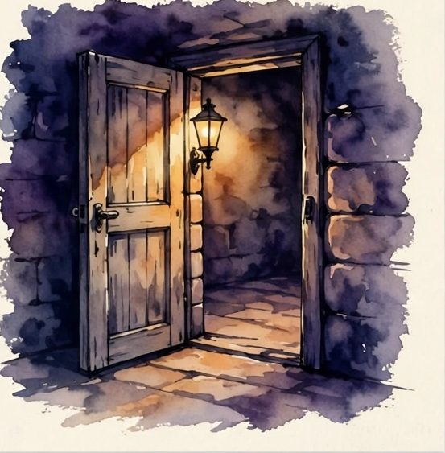
A long shadow at evening, dramatic in outline, harmless in substance.
Before this hall closes its inventory, the keeper wishes to correct two fashionable errors about the shelf, because the shadow suffers as much from glamour as it ever did from shame. The first error is that the disowned sides are the real self — that the parlour is the mask and the cellar the truth, the whole house an elaborate performance staged over a basement. The register, which keeps both sets of books, reports otherwise. The kindness is as real as the envy. The tenant list is not a hierarchy of authenticity with the worst entry at the bottom and the truest.
The second error is the opposite romance: that the shadow is a treasure house, that every disowned side is secretly a gift awaiting its golden unveiling. Some of what is on the shelf is, frankly, just unlovely — pettiness is not buried wisdom, and cruelty is not honesty in work clothes. The house's doctrine has never been that everything hidden is precious. It is that everything hidden is present, and must therefore be governed in the light of being known, rather than denied in the hope, always disappointed, of being gone by morning.
What the shadow is, then, is plumbing and wiring: unglamorous, essential, and dangerous only when its existence is disputed by the owner of the building. A person at peace with their own inventory is not a person without one. The register is not a beautiful document; it is a true one, and the house has learned to prefer the second quality in its paperwork. They are a person whose back rooms have been entered in the same plain ledger as the front — neither celebrated nor prosecuted, neither exhibited nor disowned, simply and finally and usefully on the record.
36Leaving the Cellar Door Ajar
This hall does not end with the shelf emptied. Anyone who promises that — a house with nothing disowned, a register with no reluctant entries, a cellar swept and certified vacant — is selling a property they have not personally inspected. The tenants of the shadow shelf mostly stay. Envy will take its chair by the window again; the basement will stoke its boiler on cold nights for years to come. The house's achievement is not their departure. It is the door, and the door's new, deliberate position: ajar.
Ajar is a considered policy, not a lapse in security. The cellar door, left open by the width of a hand, admits a draught of ordinary air into the places that used to ferment in the sealed dark — and lets their weather out, in small doses the parlour can absorb, instead of in the flood that follows a door blown off its hinges by decades of accumulated pressure. What is aired regularly rarely explodes. The keeper learned that rule from watching houses, and it has never once failed when applied, patiently, to people.
So the register closes the hall of the disowned with an instruction that is almost insultingly modest: do not resolve to be different. Resolve to keep the door ajar — to let the inventory stay known, the tenants stay named, the cellar stay on the keeper's rounds. The front of the house will still be the front. But somewhere behind it, all the way down, a draught of honest air will be moving, and the whole building, unaccountably, will be easier to live in for everyone, including its owner.
37The Tenderness Nobody Budgets For
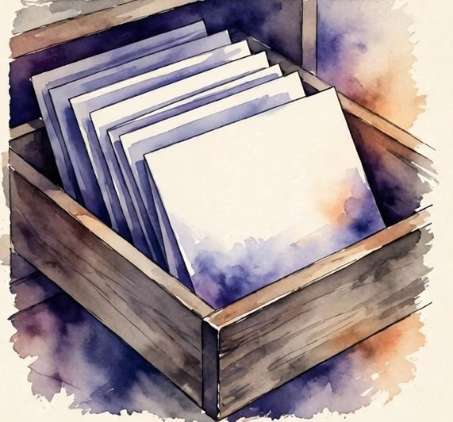
A hand paused over a sleeping household, the day's accounts forgotten.
The new hall opens on the opposite side of the ledger from the last: not the tenants nobody claims, but the wealth nobody counts. Every household budget accounts for duty, provision, and defense; almost none sets a line for tenderness — and yet it is spent, in most houses, in quantities that would alarm the accountants into an emergency session. It goes out in small, unrecorded denominations: the voice softened for a tired spouse, the worry carried silently all afternoon, the fierce and unreasonable love for creatures and people and even objects that have never once been consulted about deserving it.
Tenderness is hidden not because it is shameful but because it is defenseless. Displayed carelessly, it is mocked by the parlour's standards of dignity; examined too closely, it embarrasses even its owner, who may have a reputation — sometimes self-awarded, carefully maintained — for being made of sterner material. So it keeps to the back rooms, where it does its work unobserved: the packed lunch with the note in it, the light left on for the late arrival, the grief at a stranger's misfortune felt at full strength and reported, ever, to no one at all.
The house wishes to enter it in the register at its proper scale, which is enormous. Strip the unbudgeted tenderness out of an ordinary life and what remains is administration — competent, solvent, and uninhabitable. It is the tenderness that makes the rest of the entries cohere, that turns a house from a managed property into the place this whole tour has been describing. The keeper counts it, privately, as the estate's largest asset, and the only one on the books that increases by being spent.
38Crying at Small Things
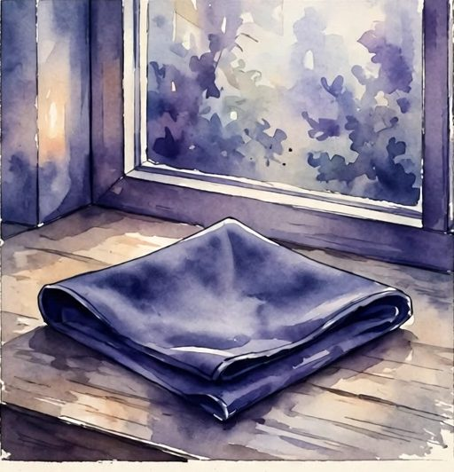
Rain on the inside of the day: a song, a kindness, a dog waiting faithfully.
It is a reliable entry in the register of the hidden: people are undone by small things, in private, at moments they would be hard pressed to justify to the front of the house. Not the great bereavements — those get their ceremonial tears, appropriately witnessed and properly mourned — but a song from a passing car, an old man's careful handwriting, a dog waiting outside a shop with total and unguarded faith. The eyes fill at the traffic lights. The resident, astonished at the timing, wipes them and tells no one, ever, on what feels like principle.
The smallness is the mechanism, not the accident. Great sorrows are met by the prepared self, the one with handkerchiefs and phrases and a chair pulled up. Small things slip past the guard entirely and arrive at the back rooms unannounced, where the unbudgeted tenderness keeps its accounts, and the response there is immediate because it is entirely unmanaged. What is wept at is rarely the thing itself. It is everything the thing is briefly permitted to stand for — time, mostly, and the people it has quietly carried out of the lit rooms over the years.
The house sees no reason to be embarrassed by these entries and every reason to read them as intelligence of a high order. The tears keep a map that the composed self would never sit down and draw: they mark, precisely and without sentimentality about the marking, what the resident loves and knows to be temporary. A person who never cried at small things would not be stronger than the rest of the street. They would be a house with one room permanently mislaid, and no idea which one, or what it had stored for them.
39The Side That Keeps Every Card
In the tender wing of the house there is a side that keeps things: every card, in some houses; every ticket stub, every child's drawing, the programmes of evenings everyone else has long forgotten attending. From the parlour this resident is gently mocked as a hoarder of paper, a curator of clutter. From inside the back rooms, the keeping has a different description entirely. It is the physical department of a memory that does not trust itself, and of a heart that has decided — unilaterally, without consulting the fashions of the age — that certain evidence must survive.
The kept things are rarely valuable and never displayed, which is how one knows they are not a collection. A collection is for showing; this is for holding. The card is kept because a hand wrote in it, and the hand is older now, or gone entirely. The stub is kept because the evening it admits to was one of the good ones, and there were not so many that any can be spent carelessly. The keeper does not call this sentimentality, whatever the parlour says. The keeper calls it the archives of the tenderness, maintained at private expense, in ribbon and shoebox.
Every house is entitled to its archive, and this side keeps it without permission or apology. When the drawers are finally cleared by other hands, as drawers eventually are, the box will look like clutter for exactly one moment — until someone reads the top card, and understands the whole arrangement at once, and sits down among the sorting. The register's instruction to the keeper is minimal: keep the ribbon tied, keep the box dry, and do not let the parlour's tidiness talk you out of the one archive that was never kept for the parlour.
40Sentimentality, Unembarrassed
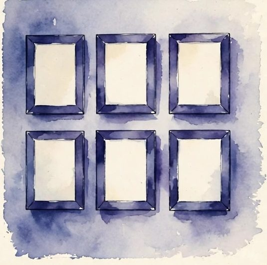
An old song played through once more, the room making no objection.
Sentimentality is the tenant the parlour most likes to tease — the weakness for the old song, the anniversary privately observed, the place revisited on purpose to stand in it and feel the years go past like weather. It is treated, in sophisticated company, as a failure of rigor: feeling in excess of the object's certified value. The back rooms have heard the charge for decades and return a flat verdict. The excess is the value. Sentiment is the interest paid, willingly and with full knowledge, on the principal of having actually lived the thing in the first place.
What the sophisticated miss is that sentimentality is memory with its guard down — the same faculty that keeps the cards and cries at small things, here caught keeping a date. It is not confusion about the past, which most sentimental people remember quite accurately, flaws filed in their proper places. It is a decision, renewed annually and entirely unembarrassed, that accuracy is not the only relationship one can have with one's own history. There is also loyalty. And loyalty, in this house's long experience, is allowed to bring music without applying for a permit.
The house closes this portion of the hall by restoring the word to its natural rank: a minor virtue, a form of faithfulness to one's own evidence. The sentimental resident is not deceived about the old song. They know exactly what it is and exactly what it is doing, and they play it through once more with the lights as they are. The register records the entry without a smirk. In a house this size, tenderness in all its denominations is senior staff, and it is not required to apologise for its uniform.
41The Soft Spot, Mapped
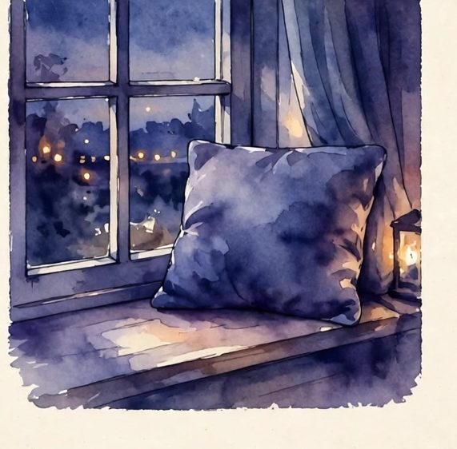
A map of one room, drawn in pencil, with one corner left in warm lamplight.
Every person keeps one unarmored place, and most spend a remarkable amount of architecture pretending it is not on the plans. The register of this house takes the opposite approach: it maps the soft spot. Not to fortify it, not to exhibit it, but to know where it is, the way a keeper knows which wall takes the weather and which stair complains in winter. Other houses spend their whole budget on the façade, and keep their tenderness the way they keep their debts — unlisted, and payable on discovery. Tenderness, surveyed honestly, stops being a rumor the house tells about itself and becomes a room with a door that opens from the inside.
The mapping is practical work, and unembarrassed. The soft spot is usually found where the biography bends: the subject that changes the voice, the name that rearranges the face, the old failure still warm to the touch decades later. A person who knows the location can make arrangements — can decline the ambush, prepare the ground, tell one trusted soul where the lamp oil is kept. A person who refuses the survey is ambushed on schedule, in company, and calls it bad luck, when it was only an unmapped room receiving weather it had not been introduced to.
So the tender hall begins with a chart rather than a confession. The soft spot, once mapped, does not grow smaller; it grows quieter, because known rooms do. Its keeper stops startling at its own tenderness and begins, instead, to keep the place swept. It also changes the etiquette of the corridor: a person whose tender places are charted stops flinching at shadows, stops apologizing for the one unpainted corner, and can even, on a good day, direct a trusted visitor to stand somewhere else. A soft spot, mapped, is not a weakness exposed to the corridor; it is a room whose keeper finally knows where the lamp should stand.
42Missing People Quietly
Some missing is loud and has an audience: the public anniversary, the photograph carried like a flag. But most missing is done quietly, by a side of the person that never files a report. It waters the plant they gave. It hears the first bars of a song and finishes it in their key. It drives the long way home past a street it has no business on, and says nothing about it at dinner, because there is nothing, really, to say. The register respects this side enormously: it does the heaviest carrying in the whole house, and it does it off the books.
Quiet missing is not the lesser kind, and it is certainly not the same as forgetting. Forgetting loses the address. This side keeps the address perfectly, keeps the number, keeps the exact tone of a laugh it has not heard in years — and then declines, daily, to make a production of the keeping. It has made a private arrangement with absence: the place at the table stays set in the mind, and the mind gets on with breakfast. Outsiders mistake the calm for shallowness. The keeper knows it is the opposite: a depth that has learned table manners.
There is no cure proposed in this room, and no schedule for the feeling to retire. People are missed for as long as they are missed; the quiet side simply refuses to let the missing redecorate the whole house. The kettle boils, the day proceeds, the letters that get written are the ordinary ones; and underneath the ordinariness the attachment keeps its own hours, like a night clerk who has never once asked to be introduced. To miss someone quietly is not to miss them less. The back room simply keeps its sorrows at a volume the front of the house can bear — and keeps them, faithfully, at exactly that volume, for years.
43The Side That Forgives First
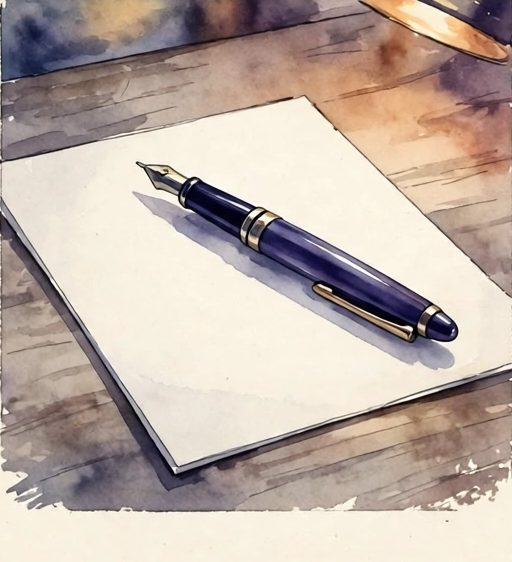
A letter answered before the ink of the other has dried, the seal still warm.
Before the apology has been drafted, before the account has been argued and settled, some part of a person has usually already forgiven. It does not wait for the delegation from the front rooms. It hears of the offense, considers the offender — the tiredness in them, the history, the hundred ordinary explanations — and quietly closes the case. The rest of the house finds out later, sometimes years later, and is faintly scandalized at the speed. The register is not. It has watched this side work for a long time, and it knows the speed is not carelessness. It is seniority.
Forgiving first is not the same as forgetting, and the side that does it keeps scrupulous records. The debt is remembered and waived, which are two entirely different operations, and only one of them is cheap. What the forgiving side refuses is the carrying: the reheated grievance at breakfast, the interest compounding in the dark. It has calculated, correctly, that the person who holds the grudge pays the rent on it, in the best rooms of the house, and it would rather have the rooms back. So it forgives early, in private, without an announcement or a ceremony.
Sometimes the front of the house never catches up, and the forgiveness stays a back-room fact, known only to the keeper and the kettle. That is permitted. A pardon does not require publication to be valid. There are houses in the archive where this side did the forgiving so early and so quietly that the offense itself seemed to lose interest — arriving, eventually, at a door that had in effect already been opened, with the kettle put on behind it. The front rooms may still be negotiating their terms; somewhere in the back, the side that forgives first has already set the kettle on for whoever comes home.
44Kindness Done Anonymously
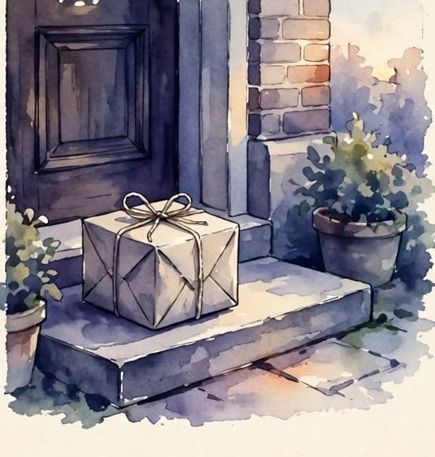
A basket left at a side door at dusk, the path empty in both directions.
The hidden side signs nothing. Somewhere in every well-kept person there is a department that gives without a return address: the bill quietly covered, the flowers with the card removed, the favor done through three intermediaries so that gratitude will have nowhere to land. This is not modesty, which is a performance and knows it. It is something cleaner — a preference for the gift to travel without an escort. The giver has discovered that a kindness with a name on it becomes, however gently, a transaction; and this side does not trade. It simply leaves the basket and takes the long way home.
Anonymity protects both ends of the gift. The receiver owes nobody, performs nothing, and may enjoy the thing in peace; the giver collects nothing and is therefore free of the small corruptions of being thanked — the swelling, the expectation of a sequel, the quiet bookkeeping of who noticed. What remains is the pure event: a need met, a day improved, a stranger's winter slightly shortened. The register files such events under the house's true economy, which runs almost entirely on currency that was never signed for and cannot be displayed.
It is the finest bookkeeping in the building, precisely because it is not bookkeeping at all. Years later, the giver cannot remember half of it, and the receiver never knew any of it, and somewhere between the two ignorances a remarkable amount of the world's actual good got done. The receiver's day was altered by a hand they will never shake, and the giver's by a receipt they never received; the transaction exists only in the register, and the register, on this subject, is discreet to the point of poetry. In the register of this house, the finest entries are the ones with the signature left blank.
45The Lullaby Register
There is a voice a person keeps that almost nobody in their official life has ever heard: lower, slower, stripped of every instrument of command. It comes out at bedsides and in sickrooms, over telephones carrying bad news, in kitchens at the hour when a frightened somebody needs the world reduced to one calm sentence at a time. The register calls it the lullaby register, and it notes that careers are not made in it, reputations are not built in it, and yet it may be the most consequential voice a person owns — the one by which they are remembered in the rooms that matter most.
The keepers of this register are often surprising. The executive with the famous bark keeps one. The sergeant keeps one. The sibling who has not cried in thirty years keeps one, in perfect working order, and produces it on the first night it is needed without any rehearsal at all. It seems the voice is not learned so much as stored: a piece of the house's original equipment, installed before the front rooms were furnished, in the years when the person themselves was the one being sung to in the dark. What was received is kept, and what is kept is passed on.
It asks for no audience and survives long silences between uses. A person is not fully known, the register maintains, until someone has heard the voice they keep for the dark and the small hours. It survives, in the archive's files, executives and sergeants and the famously unsentimental; the register has never found the house, however grand its front, that did not keep the voice somewhere among its back rooms. The lullaby register is the house with its shoes off — and it is, on the evidence of every sickroom and nursery ever kept, the truest acoustics the building has.
The Back Room Desk
One desk receives all correspondence for this house — questions, corrections, greetings, and word of rooms you are thinking of opening. It is read in the order it arrives.
46Grief Kept in Good Order
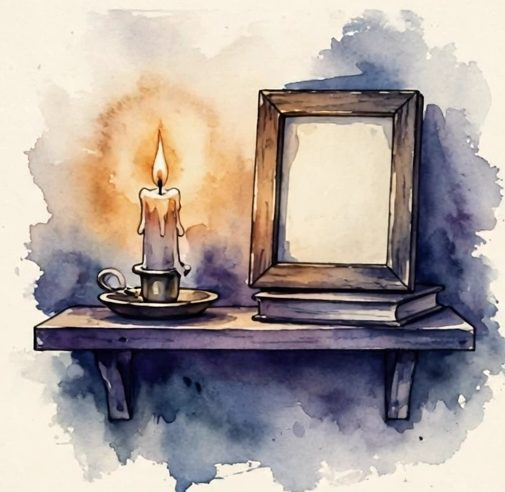
A drawer of folded letters, each tied once, the grief shelved like winter linen.
Not all grief is weather. Some of it, in the well-kept person, is housekeeping: a side that tends sorrow the way a good keeper tends a store-room — everything labeled in the heart's own hand, everything in its place, the anniversaries observed, the names still spoken in their correct tense. This side does not perform its grief and does not apologize for it either. It simply refuses to let the worst thing that happened become the landlord of the whole house. The grief has a room. It is a real room, and it is visited; but the grief does not get the run of the corridors.
Good order is not denial, and the register is precise about the difference. Denial locks the door and loses the key. Good order keeps the key on its hook by the door, oiled. The drawer opens — on the scheduled days and on the ambush days both, at the song, at the smell of a particular soap — and what is inside is taken out and held and, in time, put back, folded the way it was. The work is not to feel less. The work is to keep the feeling from becoming the only furniture. It is slow, unglamorous, and it is how the tender side survives its own tenderness.
Years pass. The room stays. Visitors to the house may never be shown it, and that is as it should be; some rooms are kept for the keeper and the dead, in that order. And in the good years, which do come, the room is almost possible to forget — not because it has emptied, but because the keeper has learned its hours the way one learns the hours of a beloved, difficult relative. Grief kept in good order is grief that has been given a room of its own — visited often, aired regularly, and never, ever mistaken for the whole house.
47Love That Doesn't Announce Itself
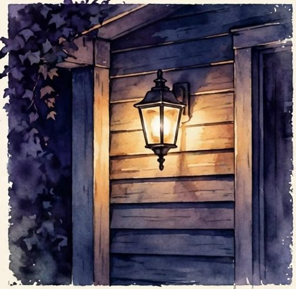
A coat taken in at the seams by lamplight, the owner asleep in the next room.
The loud loves get the front rooms — the declarations, the anniversaries with speeches, the grand gestures recorded for the corridor. But the register's longest and most consequential entries belong to a love that never announces itself at all. It speaks in maintenance. It is the hinge oiled before it squeaks, the tank filled before the journey, the appointment remembered, the coat taken in at the seams while its owner sleeps in the next room. It has kept more households running than every declaration in the archive combined, and it has almost never once been quoted.
This love is nearly invisible by design, because its native tense is the future prepared and its native mood is the disaster quietly prevented. The loved one often never learns the half of it: they simply live in a house where things mysteriously work, where the path is mysteriously cleared, where somebody has always, somehow, already thought of it. The keeper knows. The register knows. The side that does this love asks only to be allowed to go on doing it, uninterrupted by gratitude, which it experiences — this is recorded with respect — as a mild form of noise.
Let the declarations have their evenings; they are lovely, and the house enjoys them. But when the accounts of a life are finally read, the great sums will not be in the speeches. It will not be found in the speeches because it was busy during all of them — in the kitchen, under the car, on the telephone arranging the very thing the speech was about to celebrate. Love that doesn't announce itself is not hiding, and it is not shy; it is simply fluent in a language of deeds — and the house, in the end, runs on nothing else.
48The Heart's Back Room
Every hall ends somewhere, and the tender hall ends at the last door of the corridor: the heart's back room. This is where the softest version of a person lives — the one that cries at weddings and, inexplicably, at freight trains; the one that has never learned the house's official composure and would not keep it if it could. The room is not large. By the register's survey it is the smallest room in the building, and the warmest, and the one for whose sake, on some deep level, all the other rooms are kept heated at all.
Admission is never announced and never sold. A few people, across a whole life, are let in — usually without either party noticing the moment it happened. There is no guest book. Those who have been inside know it by the quality of the quiet there, and by the fact that afterward they handle the person differently forever: with a knowledge that cannot be unlearned and a gentleness they may not be able to explain to the front rooms. The keeper does not advertise the room. Houses that advertise their back rooms find, in time, that they no longer have one.
This is the room the whole hall was the corridor to. Behind it there is nothing smaller, softer, or more defended; in front of it stands everything the person shows the weather. Every keeper in the archive keeps the same small inventory of who has been inside: a name or two, added across decades, never revised downward. The list is the closest thing the house has to a deed of ownership. The front of the house is for the world, and the world is welcome to it. The heart's back room is where the world is forgiven, fed, and finally understood.
49The Three A.M. Edition
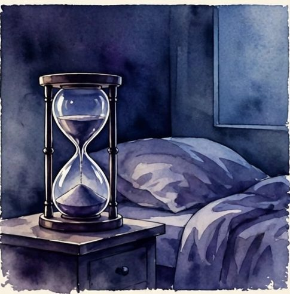
The house at three, one lamp lit, the day's accounts being reread in pencil.
Every person is published in two editions, and they do not share an editor. The day edition is abridged, reasonable, and fit for company. The three a.m. edition prints the unedited text: the worries at full size, the old sentences reopened, the future examined without any of the courtesies the daylight staff insist upon. It arrives without a subscription, in the smallest hours, and it is read — this is the curious thing — with complete attention, by an audience of one, in the dark, as if it were the only newspaper in the world.
The register's position on this edition is one of qualified respect. The night paper does not lie; it merely lacks proportion, the way a map lacks weather. Its facts are mostly facts. Its scale is the problem: at three, the unpaid bill and the end of the world are set in the same type size, and the reader, being horizontal and tired and undefended, is in no position to correct the layout. The day side, reviewing the same material at breakfast, performs the correction in seconds — and then, unforgivably, forgets by the following night that the correction was ever made.
So the house keeps both editions, and files them separately, and trusts each only within its circulation. Read the three a.m. edition by all means; some of its reporting is the most honest a person gets all week. It is filed, accordingly, in the night cabinet — read with respect, quoted with caution, and never, under any circumstances the registrar can imagine, allowed to draft a reply to anything before breakfast. The register only notes, from long observation, that nothing it has ever drafted at that hour has survived being signed in the morning.
50What the Night Shift Knows
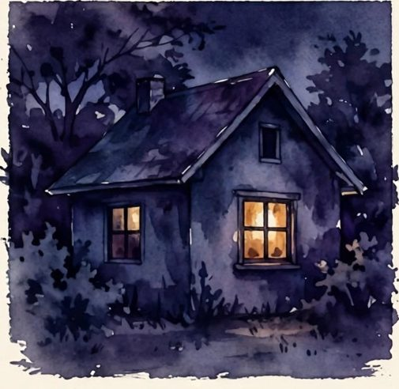
A night porter with a ring of keys, walking the corridor nobody photographs.
Every house that is honest with itself keeps a night shift, and every person is the same. The day staff run the visitable rooms; the night shift walks the whole building with a ring of keys and no audience, and it knows things the day staff have agreed, by long custom, not to discuss. It knows which step complains and where the draught gets in. It knows the actual state of the stores. It knows what the unfinished letter really says, and what the unmade decision is actually waiting for, and the name of the longing that has no forwarding address and checks the hall table nightly anyway.
This knowledge is not sinister, and the register does not treat it as a scandal. It is simply the house's night information, gathered the way night information always is: by walking, in the quiet, past doors that are never opened in company. The night shift knows the fears by name and the hopes by silhouette. It knows which of the day's brave statements were load-bearing and which were wallpaper. It keeps its counsel not out of secrecy but out of professionalism: most of its reports, delivered raw at breakfast, would do no good to anyone, including the truth.
The two staffs, it should be said, respect each other. The day side leaves the lamps trimmed; the night side leaves the corridors honest. The day staff, arriving brisk and well-lit, might do worse than read the night log before they start rearranging the furniture; some of what it records took all night to learn. What the night shift knows is not the truth instead of the day's truth. It is the same house, walked with a different lamp — and a person who has made peace with both walks is a person very difficult to surprise.
51Dreams Keep Their Own Register
Down in the house's night administration there is a ledger the waking side did not open and cannot quite read: the register that dreams keep for themselves. Its filing system is notorious. The dead return in it to run ordinary errands. Strangers wear the faces of the beloved and are accepted without question. A staircase the house has not contained in forty years leads, correctly, to the kitchen. Nothing in the ledger is in the day's order, and yet the keeper, reviewing it over the years, has noticed a disquieting fact: for all its disorder, the thing balances.
The waking side is forever tempted to audit the dream register — to sit it down in the front room and demand its meaning in plain language. The register resists, and the keeper, on the whole, sides with the register. Some accounts are kept for the pressure they record rather than the story they tell: the night's weather moving through the building, the day's leftovers being carried down to the cellar in whatever order they were dropped. A ledger is not obliged to be a parable. It is obliged to be complete, and on the evidence, this one is complete to the last moth and staircase.
So the house does not burn the blue ledger, and does not publish it either. It lets the night administration keep its own books in its own hand, and contents itself with the one reliable dividend: a person who dreams vividly wakes knowing that the house is larger than its day staff had reported. The morning, sensibly, remembers fragments — a staircase, a face, the feeling of having been somewhere important — and the register files the fragments as the night administration's customary summary: incomplete, unsigned, and strangely hard to dismiss. Dreams keep their own register, and it balances nightly; what it owes the day in sense, it repays in honesty.
52The Thoughts Before Sleep
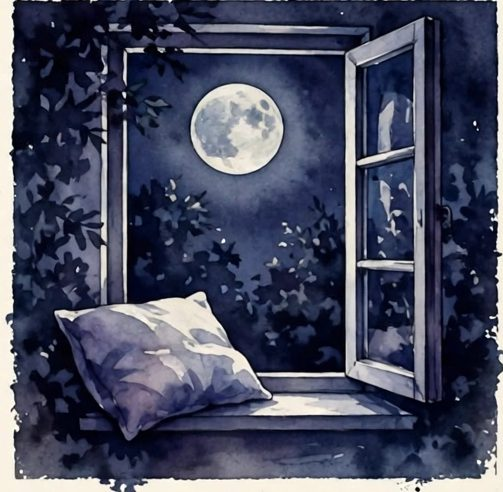
A staircase descending slowly, each step setting down one piece of the day.
Between the last task and sleep there is a small unguarded corridor, and the register has walked it in every house it keeps: the thoughts before sleep. The day is reviewed there by a tired clerk with a soft pencil. Conversations are replayed and, this time, won. Tomorrow is looked at through both ends of the telescope. Old doors open a crack. It is the least official thinking a person does all day, and — the keeper notes this without judgment — some of the most sincere, because the clerk on duty is too tired to maintain the usual editorial standards.
These thoughts wear a watermark, and it is worth learning to see it: not final. The compliment rehearsed in the corridor will not be delivered in that wording; the catastrophe rehearsed beside it will not occur in that costume either. The corridor is a drafting room, not a court. Its products are allowed to be theatrical, contradictory, and completely superseded by morning without anyone being accused of inconsistency. The house that understands this sleeps its guests in peace. The house that mistakes the corridor for a courtroom keeps its people up cross-examining drafts, and the register marks those houses, sadly, as the noisy ones.
Nothing in this room is to be bound, quoted, or answered for. It is the sound of a large building settling for the night, translated into sentences. The corridor will be walked again tonight, by the same tired clerk, with the same soft pencil; the house makes no apology for the institution and would not dream of closing it. The thoughts before sleep are the day's rough notes — worth glancing at in passing, never worth binding — and the wise keeper reads them the way one reads weather over the hills: with interest, and without moving the furniture.
53Insomnia's Honest Questions
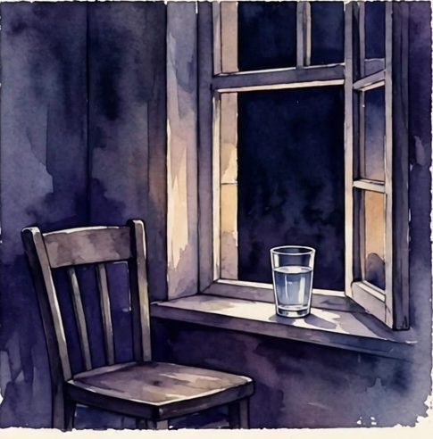
One lamp, one chair, the questions that only apply after midnight.
When sleep does not come, the questions do, and they are not the day's questions. The day asks about schedules, prices, and the wording of emails. Insomnia asks the older set: whether the work matters, whether the love is returned in the same currency it is issued, whether the road taken was the road, whether the person in the mirror is the person the sixteen-year-old was promised. They arrive without knocking and they are not interested in being answered quickly. They are interested — this is what makes them so hard to dismiss — in being asked at last, out loud, in the house's own hearing.
The register lists them without alarm, because it has heard them in every corridor it keeps. They are honest questions. Their only defect is their timing, and their timing has a certain logic of its own: the day staff, who would vote the questions down as impractical, are off duty; the night shift, who have known the questions for years, finally have the floor. A person being cross-examined by them at three in the morning is not malfunctioning. They are attending a session of the house's oldest committee, which meets at that hour for reasons of its own and adjourns, reliably, at dawn.
No verdicts are issued in this room, and none should be accepted before breakfast. The questions will keep; they have kept for years. They will be back, most of them, in some form, for years — the committee is nothing if not regular in its attendance — and the house that has stopped dreading its sessions finds them shorter, and occasionally, to everyone's surprise, almost useful. Insomnia's questions are honest ones asked at a dishonest hour — the house hears them out with respect, writes them down in pencil, and files them, gently, for the morning's better light.
54The Side That Comes Out in Fever
Fever edits a person strangely, and everyone who has sat by a bed knows the edition it produces. The side that comes out in fever speaks in fragments and certainties: childhood addresses are given as current ones, quarrels thirty years settled are taken up mid-sentence, and matters of no weight at all are announced as urgencies of state. The voice is unmistakably the person's own and unmistakably not their considered one. It is the self with the punctuation removed — the same text, run hot, the margins full of weather that the day side would have edited out in a single pass.
Those keeping the bedside vigil sometimes worry that they are hearing a truer person, and the keeper, who has transcribed many such nights into the register, is able to reassure them on the evidence. It is not a truer self. It is an unedited one, which is a different and much less alarming thing. The boiler room of the house is running above its usual pressure, and steam finds the old pipes: the childhood street, the unfinished argument, the name that still echoes. When the temperature of the days comes down, the pipes go quiet, and the person returns to their considered edition mildly embarrassed and entirely themselves.
The register transcribes these nights kindly and files them under weather, where they belong. A house is not judged by what it says with its temperature up, and neither is a person. The vigil-keepers in the archive are unanimous on one point of etiquette: nothing transcribed from the fever nights is ever read back to the author at breakfast. The house protects its own, and this is one of the ways. The side that comes out in fever is simply the draft the fever dictated; the author, on recovery, is under no obligation to publish it.
55Night Fears, Daylight Names
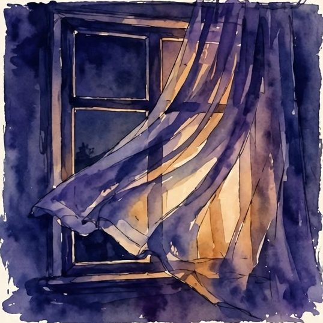
Shadows on a stair wall at midnight; the same wall at breakfast, holding coats.
What has no name at midnight usually acquires several by breakfast, and the register has long been interested in the exchange rate. Night fears are real fears wearing the dark's enlargement: in the small hours they present as one enormous shape standing in the doorway of the mind, unnamed and therefore unbounded. Daylight does not laugh at them, and this room forbids the laughter. Daylight does something better and kinder: it names them, one at a time — the bill, the letter unwritten, the conversation owed — and a fear with a name turns out, almost always, to have edges.
Naming is the house's oldest tool, older than any remedy it keeps. A named fear gets a room number. It gets a size, a place in the queue, a position among the other affairs of the house that can be handled in sequence, at a table, with the lamps on. The unnamed one gets the whole building. This is why the night fears feel so much larger than their daylight originals: it is not that the dark inflates them dishonestly, but that they are standing in an unlit and unfurnished space, and everything stands taller in the dark of a big empty room.
The keeper's practice, recorded here as description rather than instruction, is a simple two-column ledger: what it was called at three, and what it is called at nine. The second column is not a refutation of the first. It is slow work, this naming, and unspectacular; nobody has ever written a ballad about a fear being measured. But the register keeps the two columns for every house it serves, and the second column is, year upon year, the most encouraging document in the building. Night fears are not liars, and daylight is not their enemy. Between the two columns a fear gets first its size, then its name, then — in the fullness of the house's ordinary business — its turn.
56The Moonlit Version
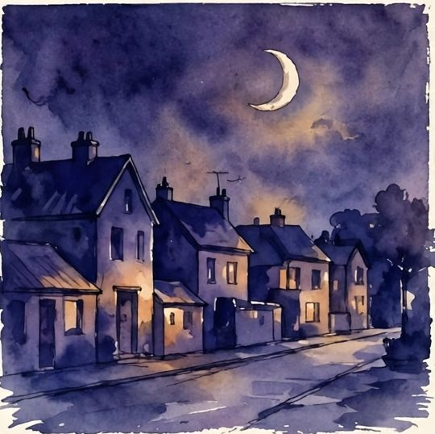
The garden path in silver, the house showing the face it saves for no one.
Moonlight is not a lesser sun; it is a different editor, and every person has a version that only appears under its management. The moonlit version is quieter than the daylight one, and silvered at the edges, and markedly more willing to be unfinished. In it, the ambitions are the same but the grip is looser. Sentences trail off without being failures. The beloved dead walk closer to the fence. A person looking at the garden path in that light is not sadder than their daytime self, exactly — they are set to a longer exposure, and everything in them that moves slowly finally registers on the plate.
Lovers and poets have always filed their reports from this version, and the register treats their testimony as reliable. Promises made by moonlight are real promises; they are written in a hand the day side scarcely recognizes, in an ink that daylight finds embarrassingly legible. Some of the most load-bearing decisions in the archive were first drafted in this silvered state — the forgiveness considered, the journey resolved upon, the love admitted to at last, alone, to the garden. The day side may execute the paperwork. The authorship, more often than the day side likes to record, belongs to the moon.
The house does not try to keep its people in one edition. A version is not a mask simply because it keeps unusual hours. Lovers have trusted it, poor sleepers have cursed it, and the keeper simply records that the house, read by moonlight, shows rooms the day's floor-plan omits — and that a person who has seen their own house in that light stops mistaking the day plan for the whole building. The moonlit version is not the disguise and not the confession; it is the same person read by a light that asks fewer questions — and on the register's long evidence, the reading is among the most accurate the house ever gets.
57What You Rehearse in the Dark
In the dark, in the unguarded hours, a person rehearses. The resignation speech is delivered to the bedroom wall with magnificent composure. The confession is made, perfectly, to a ceiling that will never repeat it. The brave sentence intended for tomorrow's meeting is walked across the stage of the mind again and again, adjusted for emphasis, stripped of its stammer. The theater has a company of one and a repertoire of a dozen scenes, and it plays, in some houses, every single night of the year. The register attends faithfully, takes notes, and has never once applauded — out of policy, not from any lack of feeling.
Morning, notoriously, uses almost none of it as written. Daylight improvises; the brave sentence comes out shorter, or kinder, or not at all, replaced by some unplanned adequacy that does the job worse and truer. The beginner concludes the rehearsals were wasted, and the keeper corrects them in the register's margin: the rehearsal was never really for the performance. It was a survey. In the dark theater, a person learns what they wish they could say — and what a person wishes they could say is the most reliable map ever drawn of where they actually stand.
So the house keeps its little stage swept and its one actor unbilled. No reviews are published; no notices are taken of the difference between the rehearsals and the life. The actor goes unthanked, the stage unlit, the notices unwritten; and yet the register, closing the book on another night's performance, finds the company's morale strangely improved by the run. What you rehearse in the dark is seldom what you say. It is, reliably, what you mean — and the register counts meaning as a first draft of courage, filed nightly, in every house, without exception.
58The Confession Nobody Hears
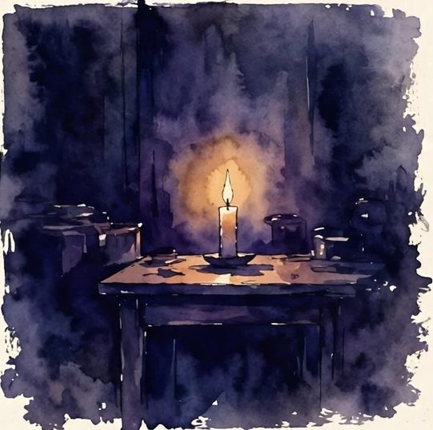
A letter written at midnight, read once, and put away with the winter things.
In many houses, some nights, a confession is made to no one. The ceiling hears it. The register, by a standing rule older than any keeper now serving, does not record it. It is the accounting a person does with themselves when no witness alive would understand the currency: the failure itemized without defense, the small meanness owned at full size, the longing admitted at its true weight. It is not addressed to anyone because it does not need to be. Its entire purpose is that it be said once, accurately, inside the house where it happened.
Unheard confessions are sometimes dismissed as wasted speech, and the register wishes to correct the record — a rare instance of the night administration speaking up. An admission is not a performance; it is a structural event. The truth, once admitted in an empty room, changes its legal status in the house forever: it stops being a rumor the keeper avoids and becomes a fact the keeper can build on. Half the turning-points in the archive are dated, on inspection, not from the day a thing was told to the world, but from the night it was first admitted to an empty room, in the dark, without witnesses.
Nothing is absolved in this room — that is not the house's department — and nothing is condemned either. The confession is simply minuted by the architecture itself, in the walls, where all such minutes are kept. No reply is expected. The room was the witness, the walls were the notary, and the entry, once made, requires no second signature — which is exactly why the confession is the one appointment in the house that is never, ever missed. The confession nobody hears still changes the confessor. A truth admitted in an empty room stays admitted when the room fills — and every room, in time, fills.
59Toward Morning, the Side Retreats
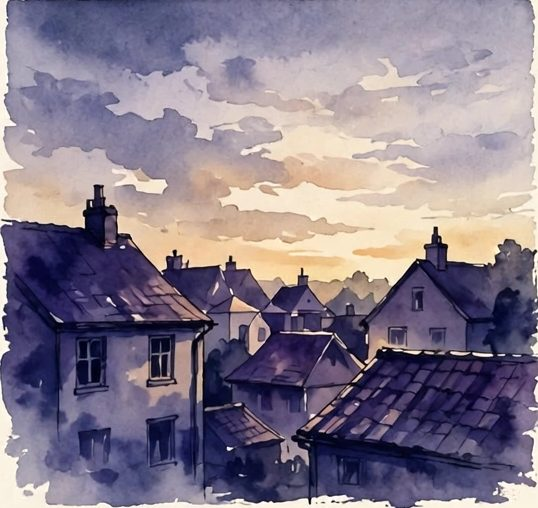
First grey at the window, the night's papers being gathered into a drawer.
The night side keeps a schedule, and its most reliable entry is the last one: toward morning, it retreats. There is no drama in the withdrawal. The editions are folded, the great questions are put back in their drawer in an order the day staff will call untidy, the furniture of the mind is returned to its daytime arrangement. The three a.m. certainties do not die; they are simply relieved of duty, the way a night porter is relieved — with a nod, a handover of the keys, and a few notes that the incoming shift will read with polite skepticism and, by the following night, complete understanding.
The retreat is not a defeat and the register forbids the day staff to celebrate it as one. The two editions of a person relieve each other like keepers of a lighthouse: the night watch has seen things the day watch has not, in weather the day watch will never stand in, and its log is not fiction merely because it was written in the dark. What happens toward morning is a truce, renewed daily, between the person who fears at full size and the person who functions at full size — each indispensable, each convinced the other exaggerates, each correct.
Then the light comes up, the kettle resumes its authority, and the house puts on its day face with the ease of long practice. The handover takes seconds and is the most practiced ceremony in the building: keys, notes, the lamp turned down to its day setting, the log signed by nobody. Toward morning the side retreats without apology, as the tide does. It was never the enemy of the shore. It was only ever its other weather — and it will be back on duty, punctual as grief and twice as honest, when the lamps are lit again.
60Keeping a Lamp in the Back Hall
The night hall ends not with a room but with a practice, and the register commends it to the attention of the house: keeping a lamp in the back hall. Every person who knows their own corridors makes some small provision for the night side's rounds — a book left within reach, a glass of water standing by, a sentence prepared in advance and kept where the three a.m. mind can find it. The provisions differ in every house and are identical in spirit. They are the day side's one reliable kindness to its night counterpart: evidence, laid out in advance, that the night walker is expected and is not an intruder.
Houses that keep the lamp are not less acquainted with the dark than houses that don't. On inspection they are usually more acquainted: the lamp is not there because the corridor is safe, but because the corridor is used — nightly, by a valued employee, on necessary business. A house that leaves its back hall pitch black is making a statement about which parts of itself it is willing to acknowledge, and the night side, which keeps the real register, draws its own conclusions and walks the harder for them. The lamp costs almost nothing. That is rather the point of it.
So the hall closes with its lamps lit and its register balanced: editions, questions, rehearsals, confessions, all filed under weather and none of it under shame. It is a small lamp, kept small on purpose — a pilot light, not a chandelier — but it is the house's signature in the dark, the one by which its own night staff navigates, and by which the house knows itself at any hour. Keep a lamp in the back hall. The night side walks there nightly on the house's own business — and it walks more gently, and finishes sooner, in a house that expected it.
The Back Room Desk
One desk receives all correspondence for this house — questions, corrections, greetings, and word of rooms you are thinking of opening. It is read in the order it arrives.
61Strengths Nobody Has Seen Yet
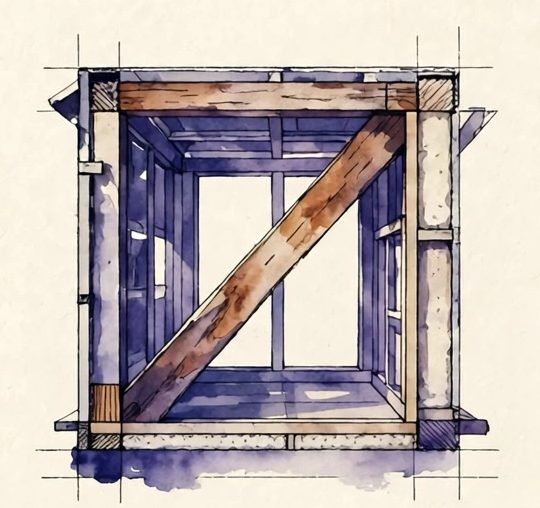
A store-room of unopened crates, their labels left blank, the contents patient.
Not every strength has had its occasion. Down in the store-room of a person there are crates that have sat unopened for decades — capacities never once called upon, because the house's history simply never produced the emergency, the voyage, or the siege that would have required them. The steady neighbor has never had to be brave in public. The unremarkable clerk has never had to lead anyone out of anything. The register declines to enter these crates as empty. It enters them as unproven, which is an entirely different line in the accounts, and a much more accurate one.
The culture of the front rooms struggles with this. It likes its strengths witnessed, certified, and preferably photographed, and it tends to assume that a capacity never displayed does not exist — an error no keeper of an actual house would make about a generator simply because the lights had not yet gone out. Much of what a person is has never been switched on. It waits in good order, oiled by nothing more dramatic than an ordinary life, against a day that may never come and is not required to. The strength does not expire for being unexhibited.
So the hall of hidden strengths opens with an act of faith in the unopened. The crates are not decorations and they are not regrets. Some of the crates, the keeper suspects, will be opened exactly once, in the one hour they were stored for, and will perform like equipment maintained for forty years by a professional who never doubted the appointment. Strengths nobody has seen yet are not strengths nobody has. The house keeps them inventoried, dry, and ready — against a day it does not schedule, does not advertise, and does not fear.
62The Skill You Never Mention
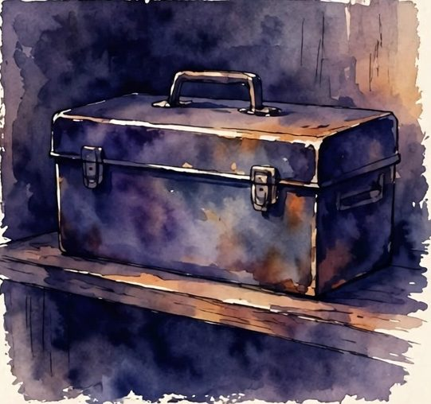
A well-kept tool on the lowest shelf, polished by use, absent from every inventory.
Everyone is genuinely good at one thing they never mention. It appears on no record and survives no interview question: the perfect knots, the ear for a failing engine, the languages absorbed in other people's kitchens, the card tricks, the impossible memory for the birthdays of near-strangers. Conversation never finds it, because conversation is routed through the presented self, and the presented self has an editor with strong views about what counts as an accomplishment. The skill goes on below the waterline of the biography, practiced faithfully, mentioned never, and owned — the register insists on the word — outright.
Such skills have a purity the exhibited ones lose. A talent performed for an audience slowly becomes a negotiation with the audience; it is adjusted, defended, and eventually curated. The skill you never mention is negotiated with no one. It has been done ten thousand times for the single reason that doing it well is satisfying, in a register below vanity. It may be the truest craftsmanship in the whole house: the one corner where the work and the worker have never been introduced to an opinion. Keepers recognize this instantly. It is how their own best work is done — the lamp trimmed perfectly in a hall nobody photographs.
Should it ever be mentioned? The register takes no position; the house's policy is that the owner of the shelf decides what goes on it. What the register records is only the fact, entered without a name attached, in the inventory of hidden strengths: It is entered alongside the exhibited talents without apology, and with a small star the register reserves for the things in the house that have never needed anybody's permission to be excellent. the skill you never mention is the one you own outright. Everything else is partly rented from other people's opinion of it.
63Courage in an Unmarked Coat
Courage rarely arrives in uniform. In the register's experience it wears an unmarked coat and does ordinary errands in frightening seasons: the telephone call made at the appointed hour with a steady voice, the appointment kept, the truth told at conversational volume in a room that would have preferred a lie, the application sent, the apology delivered without varnish. There is no bugle. The coat is usually the plainest on the row, worn thin at the cuffs from use, and its owner — this is the detail the keeper loves — almost never files the day under courage at all. They file it under errands.
Because it is unmarked, it goes unrecorded, even by the person wearing it. The world keeps a generous archive of decorated bravery and almost none of the daily kind, although the daily kind is the load-bearing one: it is what families, firms, and friendships actually run on, in the seasons when nothing is burning but everything is hard. The register has audited lifetimes of it and found its subjects consistently unable to recognize their own file. I just did what had to be done, they say, closing the book on a decade of quiet heroism with the air of someone describing the washing of dishes.
The house has its own view, and enters it here for the record: courage in an unmarked coat is still courage — indeed, it is the standard issue, and the decorated kind is the exception that proves the tailoring. The decoration, if it existed, would embarrass them; its wearers will deny it to the end, usually while performing some fresh act that belongs in the same file, and the register has learned to make the entry without consulting them — in pencil first, and then, as the years provide their evidence, in permanent ink. The house long ago stopped requiring its heroes to dress for the portrait.
64The Crisis Version of You
A spare room kept ready, boots by the door, the map already folded to the right page.
There is a version of a person who only clocks in during emergencies, and it startles everyone, including its owner. In the crisis — the accident, the phone call at midnight, the water rising through the floorboards of a life — this side takes the keys with an almost offensive calm. It is clearer than the everyday self, quicker, fluent in a language of triage the everyday self does not speak, and possessed of a humor that appears exactly when humor should be impossible. Colleagues meet it with gratitude and slight disbelief, as if introduced to a more competent sibling who happens to share the name.
The everyday self is often quietly embarrassed by the comparison, and wonders in the aftermath why it cannot simply be that person on an ordinary Tuesday. The keeper, who keeps the house's staffing records, offers the architectural answer: the crisis version has one job. The Tuesday self has forty — errands, courtesies, worries, plans — and carries them all in the same pair of arms. The emergency does not summon a better person out of the house. It merely clears the other thirty-nine jobs off the desk, and what remains, unobstructed, looks like genius. It is not genius. It is the same keeper, with an empty desk.
The register therefore forbids the everyday self's customary apology. The crisis version of you is not a stranger, and it is not an accusation. The boots by the door fit both selves; it was never a question of two people. It is simply worth knowing, in the calm seasons, exactly which room of the house the boots are kept in. It is the same keeper photographed in the one light in which all the other duties go dark — and the correct entry, the keeper insists, is not shame at the difference, but pride in the staffing.
65Competence Offstage
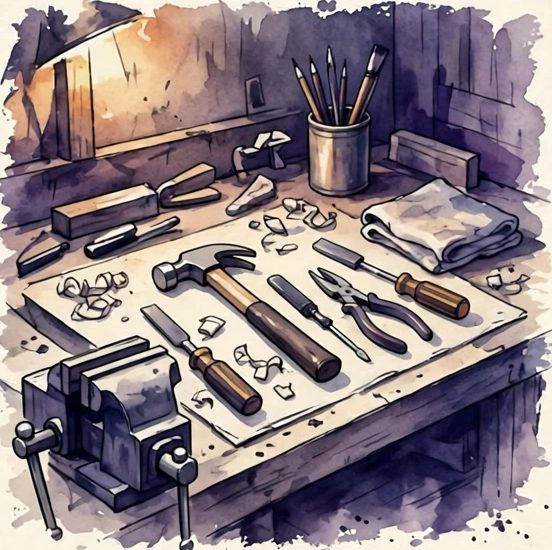
Backstage ropes and pulleys, oiled and known by touch, the show invisible from here.
The audience sees the finished gesture and applauds it, as audiences should. Offstage, in the wings of every well-run life, stands the competence that made the gesture possible: the one who knows where every rope runs, who restocked before the shortage, reconciled before the audit, remembered before the occasion. Competence offstage is a distinct discipline from competence on it. Its whole purpose is to never be noticed — to produce, season after season, the impression that things simply go well around this person, the way things simply go dark at nightfall, naturally and without an author.
The register promotes these entries from the margins, where the front rooms habitually file them. It has audited too many households and enterprises to retain any doubt about where the load is actually carried: in the preparation nobody time-stamps, by the person nobody profiles, whose name appears in the minutes only when something, once, went wrong in their absence. Whole biographies in the archive could be rewritten honestly around their backstage staff — and in many of the best lives, the biography and the backstage staff are the same person, applauding others from the wings with complete sincerity.
It asks for very little, this competence. Not the curtain call, not the credit line; only that the ropes hold, and that once in a decade somebody with a lamp walks the wings and understands what they are looking at. There are houses in the archive that lost their backstage keeper for a single season and discovered, in the collapse of a hundred small arrangements, the entire invisible architecture of their comfort — and never filed competence under miscellaneous again. Competence offstage asks for no applause. In this house, the ropes are inspected, and the inspector files the gratitude where it belongs: in the register, in ink.
66The Talent in the Wrong Drawer
Some talents are not lost. They are misfiled. In one of the back drawers of a person sits a capability in perfect working order, stored in entirely the wrong department of the life: the singer filed under accounting, the carpenter under customer service, the born teacher under logistics. The drawer is opened by accident now and then — a wedding, an emergency, a colleague's despair — and the talent comes out, performs beautifully to general astonishment, and is put back, by its owner, with a sigh that the register has heard in every house it keeps and has never once managed to translate. It is not quite grief. It is more like visiting a room you used to live in.
The keeper urges a precision here, because the front rooms are quick to melodrama. A talent in the wrong drawer is not, by itself, a tragedy, and the register refuses to file it as one. Lives are not obliged to be organized around a single gift; there are rent, weather, affections, and the plain fact that a person is a house and not a theater. A drawer, furthermore, is a form of keeping. The violin among the files is not rotting; it is in tune whenever it is opened, which is more than can be said for many a talent stored in the open, in the draft of other people's expectations.
The archive's position is therefore one of respect, with a single footnote added in a keeper's hand: that the drawer be opened sometimes, on purpose, for nobody. The keeper's footnote, added in a smaller hand, is that drawers are not graves. What is stored in a house this well kept is stored at the temperature of return, and more than one file in the archive closes with the drawer opened, late and to general astonishment, by its owner. A talent in the wrong drawer is not a talent wasted. It is a talent in storage — and storage, in a well-kept house, is a form of respect.
67Endurance, Quiet Brand
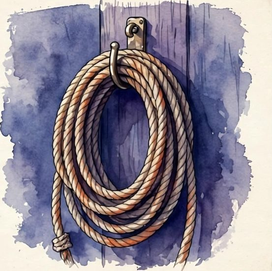
A kettle that has outlasted three stoves, still first to the boil in hard weather.
Endurance comes in two brands. The celebrated kind has finish lines, witnesses, and a story with an arc; it is real, and the house salutes it. The quiet brand has none of these. It simply continues — through the long season, the slow winter of a family's fortunes, the years in which nothing improves except, almost imperceptibly, the person. There is no event in it to narrate. There is only the accumulated fact, visible in the register over decades, that its owner is still here: still answering letters, still kind at breakfast, still setting the table for a future they have no documentary evidence for.
The quiet brand keeps no diary and sets no records, which is why the world's archives are nearly empty of it, and why the keeper considers this register's copy so valuable. Its evidence is negative space: the despair that did not take, the bitterness that was available daily and declined daily, the ordinary morning chosen ten thousand times in a row. Anyone can be found once at a finish line. The register is interested in the other statistic — the Tuesday mornings, all of them, attended in full, in weather that gave no one any reason to applaud and the person no reason to stop.
It does not ask to be called strength, and it would decline the medal as a category error. But the house insists on its entry, in the plainest ink it owns: It will not be photographed crossing anything. Its monument is a household still standing, a table still set, a person still recognizably themselves on the far side of the years that were supposed to finish them. endurance, quiet brand, is measured the way everything that matters is measured in this register — not by the storm, but by who is still setting the table after it.
68The Side That Carries Others
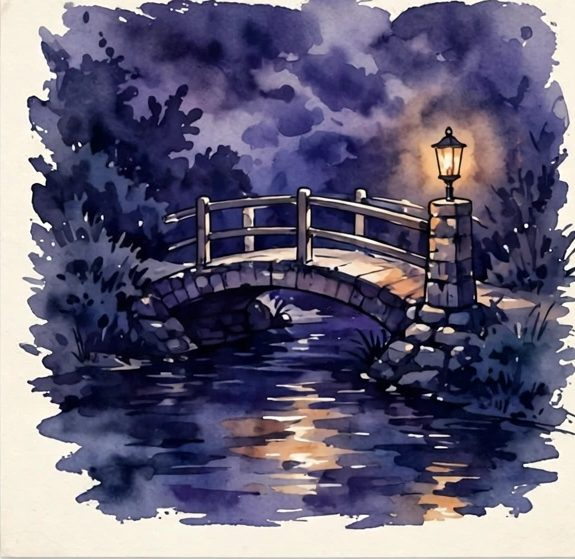
A yoke worn smooth, a path doubled back on itself a hundred times.
In every family and every firm there is a load-bearing person, and within them a load-bearing side: the one that carries others. It remembers the appointments and the anniversaries, absorbs the shock of bad news before passing it on in a softened currency, lifts the end of every heavy thing without being asked and without keeping the receipt. Schedules hold because this side holds. Morale survives because this side does the invisible mathematics of other people's strength and quietly supplies the difference, from its own stores, at its own expense, on a budget nobody has ever once reviewed.
The register watches this side with particular care, because carriers have one consistent blind spot: they do not put themselves on the inventory. The shelf everyone stands on is assumed — by the whole household, and, most reliably of all, by the shelf. The keeper's audits have a special stamp for the discovery, made late in so many files, that the strongest person in the building had been running on their reserves for years while every gauge in the house pointed at the loads and none at the lifter. It is the commonest maintenance failure in the archive, and the most expensive.
So this room's entry is short and stands as a standing order. It is not a plea for gratitude performed at volume; the carriers of the world would mostly find that embarrassing. It is a maintenance note, filed where the future keepers will find it: that the wall which holds the house is entitled to the house's care in return — to rest without apology, to help received without argument, to being, now and then, the one who is carried through the door. The side that carries others is the house's strongest wall — and even the strongest wall gets inspected, thanked, and, on a schedule the keeper will enforce if necessary, occasionally relieved.
69Luck Had Help
Review the celebrated escapes in any life — the disaster narrowly missed, the chance that arrived precisely on time — and most of them dissolve under inspection into preparation. Somebody had quietly built the conditions in advance: the small savings, the maintained friendship, the spare key with the neighbor, the letter requested years earlier against no visible need. At the time, all of it looked like fussiness. In retrospect it is indistinguishable from a miracle with good paperwork. The register's verdict on the whole category is entered without hesitation: luck had help, and the help, more often than not, was supplied by the beneficiary themselves, in an earlier and less applauded edition.
This is the hidden strength nobody brags about, because bragging about it would spoil the story. Laying in provisions for a future self is deeply unglamorous work. It has no audience, no deadline, and no guarantee of ever being used; half of it, in a well-run life, never is. It is prudence practiced as a private art — the night shift of it working in ordinary hours, stocking the cellar of the biography against winters that exist, so far, only as a keeper's hunch. When the winter comes, the well-stocked house experiences it as luck. Houses that kept nothing experience the same weather as fate.
The keeper requests only a small correction to the record, for the sake of future provisioning: that when fortune is next praised at the table, somebody remember to thank the earlier edition at the far end of it. The register's older keepers are known to leave a chair for that earlier self at the celebratory table; it costs one setting, and it corrects the history more than any speech. Luck had help, usually — and the help was given by a past self, working the unthanked shift, who deserves at least a footnote in the family's official history of the miracle.
70The Reserve You Didn't Know You Had
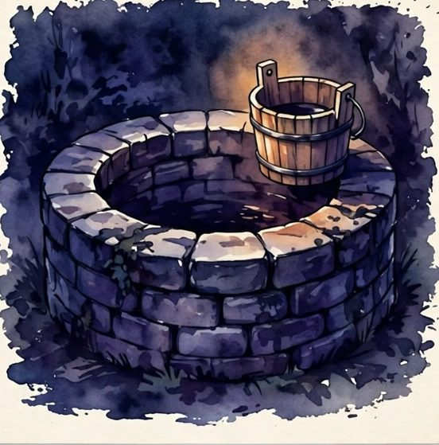
A cistern under the floorboards, found full in the driest month on record.
There are reserves a person does not know they hold until the ordinary supply runs out: a depth of patience below the patience, a store of humor kept under the floor of the personality, a second wind that was never listed among the house's equipment. The discovery is usually made mid-crisis and reported afterward with genuine bewilderment — I don't know where it came from — by people who had sincerely believed they were at the end of themselves. The register has heard the sentence in every corridor it keeps, and it has learned to hear it not as a mystery but as an audit finding: the account was larger than the statements showed.
The keeper, who keeps the plans of the house, knows where the cistern came from, and the answer is undramatic. It was laid down in easier years, in small deposits: a hundred ordinary kindnesses done to oneself and others without bookkeeping, difficulties survived and converted, slowly, into depth. Nothing about the reserve is supernatural. It is compounding. A life, like a house, quietly stores what it does not spend, and a person who has spent years being decent in unremarkable ways discovers, in the driest month on record, that decency has a savings account and they are the beneficiary.
So the house does not call it a miracle when the reserve appears, and it does not let its owner call it one either. The cistern asks nothing for its decades of silence. It does not even insist on being believed in during the wet years, which the keeper counts the surest sign that its water will be there in the dry ones. The reserve you didn't know you had is the interest on a lifetime of small deposits — paid out, with the register's compliments, exactly when the account is needed.
71Unwitnessed Victories
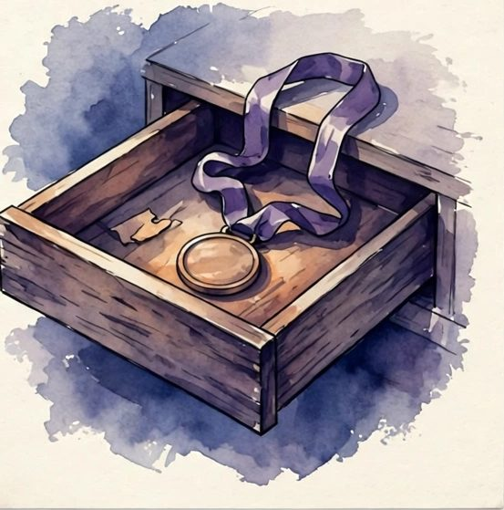
A shelf of bright silver in a locked room, the audience permanently zero.
The largest victories in most lives have no witnesses. The temptation declined alone in an empty kitchen at midnight. The letter written in full fury and never sent. The year that was quietly turned around, the way a great ship is turned at night — no spectators, no announcement, only a new heading by morning. The world keeps no record of these events, and would not know how to score them if it did; they do not photograph, they cannot be verified, and their only evidence is the subsequent biography, which reads, to everyone else, like unexplained good weather.
This register keeps the only copy, and it keeps it under a rule of deliberate incompleteness: no names, no dates, no details. Unwitnessed victories have a property the keeper protects the way one protects a flame from a draft — they lose something essential when they are exhibited. Their value is precisely that they were done for no audience, at the hour when the whole house of the self could have voted the other way and nobody would ever have known. That they were won anyway is the purest information the archive holds about what a person actually is.
Let the witnessed ones have their ceremonies; they have earned them, and the house attends gladly. But the final accounting of a life, in this keeper's professional opinion, will be read from the other ledger. They are the medals of a one-person campaign, struck in a mint that issues no duplicates; and the keeper, locking the room at night, has sometimes thought them the brightest silver in the house precisely because no hand but the owner's has ever polished them toward a shine for others. An unwitnessed victory is not a lesser victory. It is the purest denomination of the currency — value with no exchange rate at all.
72The Strong Room
Old houses have a strong room, and it is not primarily for valuables. It is the room built deepest and plainest, with the thickest walls, where in the worst weather the whole household gathers and waits out whatever is happening to the rest of the building. Every other room in such a house may be finer. None is more considered. The architect put the strong room where it is on purpose, and the family that has lived through a season or two in it never again asks why the money was spent on walls nobody could see, in a room with nothing in it worth photographing.
In a person, the strong room is the same construction: the innermost steadiness, the place from which the other sides are supplied when the house is under siege. It is furnished almost not at all — a conviction or two, worn smooth; a small store of sentences that have proved true in bad weather; the knowledge, tested, of what one will and will not do. It is rarely visited in peacetime. It receives no guests. The front rooms get the compliments, the tender rooms get the poetry, and the strong room gets, decade after decade, the one tribute that matters: it is never needed until the night it is the only room standing.
The hall of hidden strengths ends here, deliberately, at its plainest door. Every other room in the house may be shown, and in this house most of them are. The strong room is simply kept — swept, stocked, and unmentioned. Visitors will praise the view, the library, the garden; the register lets them. The keeper, walking the rounds at night, passes the strong room's plain door and rests a hand on it a moment, the way one thanks a colleague whose work is done entirely in the dark. A life, like a house, is judged in the end not by its frontage in fair weather, but by whether it had one.
73The Side Everyone Meets Before You Do
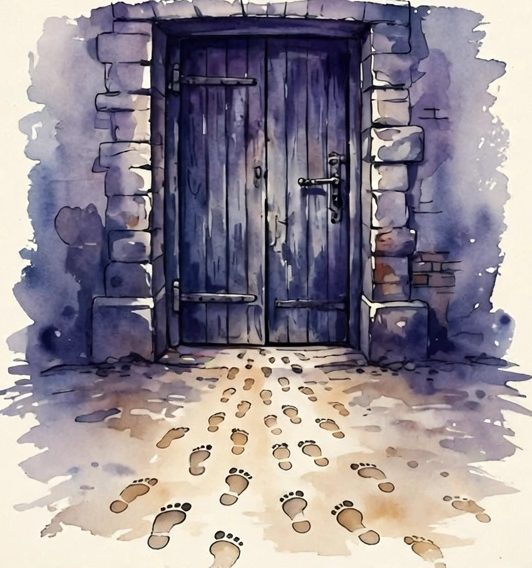
The front step in morning light, footprints arriving before their owner wakes.
There is a side of you that arrives in every room a half-second before you do, and it has been making your introductions your whole life without your supervision. It is compounded of posture and tempo, of the weather a face carries through a doorway, of whether a person's entrance lowers the room's shoulders or raises them. You are, of necessity, the last person ever introduced to it. Everyone else has been reading that edition for years — colleagues, in-laws, the dog — and has formed, from its pages, the settled first opinion that your actual words will then spend an hour confirming or fighting.
The discovery, when it comes, usually comes by ambush: a photograph unposed, a recording played back, a friend's affectionate imitation. The shock is universal, and the register wishes to record that it is entirely undeserved. There is no betrayal in the material; the advance side is not a false front but a true one, drawn from real stock — it is simply the self as summarized by physics and habit, in the half-second before the editor arrives. The keeper's files suggest that the people who make peace with this ambassador early live noticeably easier than the people who spend forty years insisting the ambassador is an impostor.
It cannot be abolished, and the house does not recommend the attempt; a person with no advance side would arrive like weather without a forecast, and rooms dislike that more. It can be briefed, in time, the way any ambassador can: not by redecorating it out of existence, but by giving it better dispatches to carry — a posture informed by the truth, a tempo set by the actual resident rather than by old weather. The side everyone meets before you do is your earliest ambassador. Ambassadors deserve briefing, courtesy, and an occasional review of their dispatches — not blame for existing.
74Blind Spots Are Also Sides
One chair in the room its owner has never sat in, facing the corner window.
A blind spot is usually described as an absence, a gap in the seeing, and the register has come to believe the description is wrong. A blind spot is a side. It is the side of a person whose whole function is to not look at one particular thing — and it holds that post, in most houses, with a fidelity the other sides might envy. The devotion that cannot afford to see the flaw in the beloved. The pride that cannot afford the true price of the apology. They are not malfunctions in the optics. They are staff, on duty, following orders the house gave them long ago and has since forgotten signing.
This reframing matters because it changes the maintenance. A gap you curse; a side you can negotiate with. The keeper's files are full of blind spots that were not stupidity but protection installed in an earlier emergency — the child who survived by not seeing clearly grows into the adult whose eyes slide, once, instinctively, at exactly the old angle. Demolishing such a structure on sight, because it is fashionable to see everything, is poor keepership. It was holding something up. The register's practice is slower: learn where the blind side stands, learn what it is guarding, and walk the corridors accordingly, lamp in hand.
None of this canonizes the blind spot. Some of them guard nothing but a vanity, and some outlive their emergency by fifty expensive years. But the house that understands them as sides — with duties, histories, and reasons — manages them the way it manages everything it respects: deliberately. The corridors of such a house are walked differently — not in denial, and not in the glare of total inspection either, but with the lamp carried at the height the keeper has learned the corners require. Blind spots are also sides. The wise keeper does not demolish them on sight, but learns where they stand, and walks accordingly.
75Your Face When You Aren't Managing It
There are two faces, and only one of them is managed. The managed face is the one in the photographs, at the meeting, in the mirror during inspection — arranged, lit, on duty. The other face is the one at rest: caught in a window reflection when the mind is three streets away, worn in the last unguarded moment before sleep takes the shift. Friends recognize it instantly and could draw it from memory. Its owner has never seen it once, except in ambush photographs, which they reliably dislike for reasons they cannot articulate and the register can: it is the only portrait of themselves they did not sit for.
Strangers read this face first and weight it heaviest, and they are not wrong to. It is the unedited summary — what the person's weather is when no report is being issued. A resting face can belie a whole résumé of claimed serenity, or redeem, in one unposed moment, a person whose managed presentation has always seemed forbidding. The keeper finds the testimony of the two faces, taken together, to be among the most reliable evidence in the entire archive: where they agree, the file can be closed; where they disagree, there is the biography, waiting, in the gap between them.
The house does not propose that the unmanaged face be managed — the attempt merely produces a third face, more tiring than the other two combined. Photographers, those licensed ambushers, have built whole careers on the difference, and old friends, who carry the unmanaged face in memory like a second signature, will correct any portrait that omits it. The keeper files the unposed moments under evidence and trusts them accordingly. Your face when you aren't managing it is not a betrayal of the managed one. Between the two, like between tides, runs the whole truthful coastline of a person.
The Back Room Desk
One desk receives all correspondence for this house — questions, corrections, greetings, and word of rooms you are thinking of opening. It is read in the order it arrives.
76The Tell
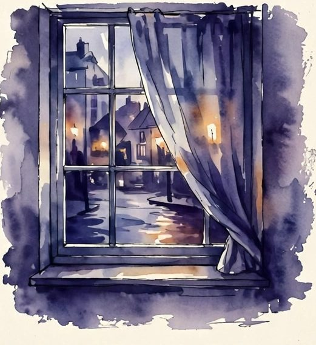
One cup on the tray with a chipped rim, giving the whole service away.
Every card player knows the tell, and every person, the register confirms, has one: the small involuntary signal by which the hidden sides announce themselves to anyone watching with love or with interest. It is rarely dramatic. A tempo changes. A joke is repeated once too often. A sudden, uncharacteristic formality arrives like a butler announcing weather. The front of the house continues its prepared remarks without interruption — and the tell, underneath, files the true report, in a code that intimates learn in their first year and strangers sometimes read at a glance, to everyone's inconvenience.
It would be easy to file the tell as a defect in the masonry, and the front rooms often do. The keeper dissents, on architectural grounds: the tell is the house's ventilation. A person sealed perfectly, whose every side reported only through official channels, would be unreadable to exactly the people who most need to read them — the friend deciding whether to ask twice, the partner who knows the difference between the two kinds of quiet. The tell is how the back rooms breathe. It is how help, that shyest of visitors, finds out which door to knock at.
Attempts to suppress one usually install two more, less legible and far less kind. The houses that have tried it read, in the register's marginalia, like buildings whose windows have been painted shut: admirable varnish, unbreathable rooms, and a keeper reduced to guessing at the weather inside his own walls. The original tell, by contrast, asks only to be known — by its owner first, and then, in the house's own time, by its friends. So the register honors it, this smallest honest mechanism in the building, and records the policy in plain terms: the tell is the smallest honest thing about a person — and a house entirely without tells would be a house entirely without visitors.
77What Leaks Through
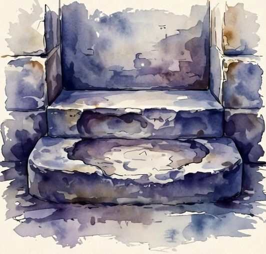
Light under a door that was supposed to be dark, music through a wall built for silence.
Containment is a policy; it is not, in any house the keeper has audited, a fact. Something always leaks through: the softness inside the strict voice, arriving a syllable early; the steel inside the gentle one, detected by exactly the people it was meant never to reach; the grief in the middle of the joke, the joy banked down in the middle of the complaint. This leakage is not the failure of the walls. It is the biography escaping its own editing, in real time, at conversational volume, in front of witnesses who are far better at reading seepage than at believing statements.
Children and colleagues are the great leak-readers of the species, and for opposite reasons that produce the same accuracy: children have not yet learned the official text, and colleagues have learned it too well to be fooled by it twice. Both build their working picture of a person almost entirely from what leaks — and their pictures, the register notes with some respect, are the ones that survive. The presented self is revised quarterly and believed by no one with tenure. The leaks are believed by everyone, including, in the small hours, by their owner.
The keeper's instruction to the file is therefore trusting rather than tidy. It is the seepage that tells the new neighbor where the kindness lives, the apprentice where the standards are kept, the frightened guest which chair in the house is safe. Whole rescues, in the archive, have been navigated by nothing else. What leaks through a person is not evidence against the walls; it is evidence the house is lived in. The register trusts it more than any tour — and has noticed, over the years, that the houses which leak kindness against their own policy are remembered longest of all.
78The Reputation's Shadow
A reputation casts a shadow, and the shadow leads a life of its own. It enters rooms measurably earlier than its owner, stays in them later, answers questions in a voice very like the original's, and is mistaken for the person by everyone too busy, too distant, or too incurious to wait for the original to arrive and correct the record. People embrace the shadow at conferences. They promote it, marry it, quarrel with it, and hold grudges against it for decades. The person themselves, meanwhile, goes on living at home scale, largely unaware of the size of the figure being entertained in their name across town.
The shadow's durability has a specific cause, and the register is fair-minded about it: it is built mostly from true fragments. The anecdote happened. The sentence was said. What the shadow's editors — which is to say, everyone — have done is abridge: selecting the vivid over the typical, the worst Tuesday over the median year, until the silhouette is footnoted entirely to real events and yet resembles no one the keeper would admit to the back rooms. A reputation is its owner edited by other people's needs, and other people's needs, the archive shows, are not an editing standard that produces likenesses.
The house cannot abolish its shadow and the keeper does not propose the attempt; shadows are a by-product of light, and light is not negotiable. It lengthens and shortens with other people's weather, and the register's oldest marginal note on the subject observes that the hours spent being known compound quietly, while the hours spent managing the shadow merely recur. The reputation's shadow is not the person, and it is not nothing. The register's counsel to the house is simply this: feed the person, keep the back rooms in order, and let the shadow make its own arrangements.
79How Children and Dogs Read You
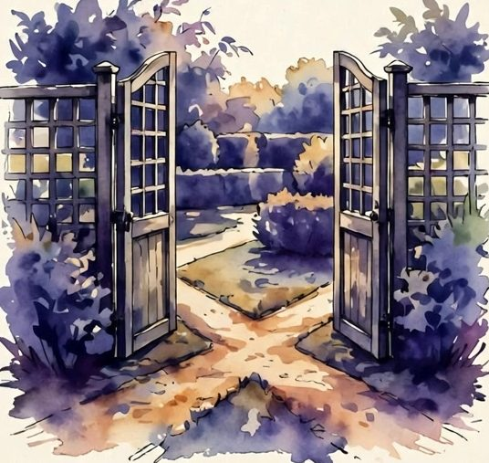
A low doorway in the house, where the reading is done at knee height and believed completely.
There are two readerships in the world that cannot be managed, briefed, or spun, and the register weights their reviews above all others: children and dogs. Both skip the prepared text entirely. They do not consult the reputation, the résumé, or the reputation's shadow; they read the person directly, at knee height, in the original — the patience, the startle, the genuine article of attention or its counterfeit, which they can identify in under a minute with an accuracy that no selection committee in the archive has ever matched. Their methods are a mystery to the front rooms. Their conclusions are not.
The reviews are published instantly and without appeal, in the only journal that matters: behavior. The child who carries the broken toy to you, past three taller and more qualified adults, has filed a report. The dog that sleeps with its back turned to you — the posture of complete, unguarded trust, the highest honor its species issues — has filed another. The register keeps these clippings ahead of the testimonials, the references, and the five-star endorsements of the managed world, because they were written by critics who wanted nothing, feared nothing, and could not be fooled for longer than it takes to open a door.
It is, on balance, a consoling file. The child at the low doorway and the dog asleep against the door have never once asked for the prepared statement; they took the measure of the house at knee height, in the original, and their verdict — delivered without a word of it — is the one the keeper would choose to be judged by. How children and dogs read you is the edition of yourself that no preface can fix and no editor can reach. Fortunately — and the keeper records this as the considered finding of a long career — it is usually a kinder edition than the one you feared.
80The Side Your Enemies Describe
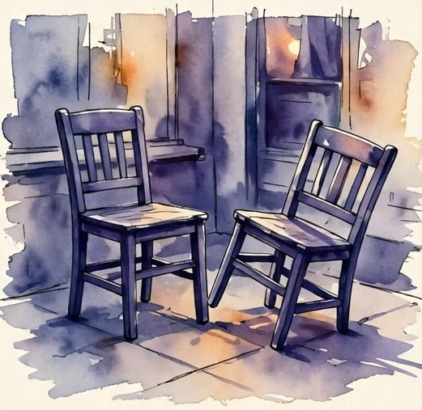
A portrait drawn from across the street, the lines all true and the likeness all wrong.
Every person's file, if the register is honest, contains one hostile biography: the side your enemies describe. It is not fabricated — that is what makes it sting, and what makes it literature of a kind. It is assembled from the worst Tuesdays, quoted accurately and arranged mercilessly: the sharp sentence kept, the context discarded, the pattern drawn through the lowest points on the graph. In this telling, the person's hesitations are cowardice, their firmness is cruelty, their silences are contempt, and their jokes, examined under this light, are evidence. Every line is true. The likeness is all wrong. Both facts are the whole problem.
The register's policy toward this document is one of the house's more controversial standing orders: it is not burned. It is read — carefully, the way a keeper reads a surveyor's report commissioned by a rival. The measurements in it are useful precisely because the surveyor was not trying to flatter the house. Load-bearing claims should be checked wherever they were taken. A criticism that survives being stripped of its malice is worth its weight in repairs; most do not survive, and the keeper notes, with professional calm, that the failure rate of hostile measurements is itself a measurement of the house.
So the file stays in the drawer, corrected in pencil where the keeper's own surveys disagree. Some of its soundings will be wrong by fathoms. A few will mark the reef the official charts were too polite to print, and the house is safer, in the end, for having both surveys in the drawer. The side your enemies describe is not you, and it is not nothing. It is your coastline charted by unfriendly weather — and a wise keeper keeps even that chart, annotated, against the day the weather turns out to have seen something first.
81Mirrors Held by Other Hands
Some mirrors a person cannot hold for themselves. The sides of a self face outward as often as inward, and other people see them the way you see the back of your own coat — in a shop window, by accident, slightly too late to arrange your face. The house accepts these borrowed mirrors as instruments rather than insults. A colleague, a sister, an old friend: each carries a polished surface angled at exactly the wall the keeper cannot reach, and the reflection, however unwelcome, was carried across the room in good faith more often than we admit at the desk. The keeper files such mirrors under instruments, between the ladder and the level, where useful things belong.
The borrowed mirror shows the room from the corridor: the laugh that arrives half a beat before the joke ends, the patience that thins at a certain hour of the afternoon, the generosity that somehow never appears in the keeper's own account of the week. None of these reflections is the whole house, and the register warns against framing any one of them as a portrait. Each is a true angle of one wall — which is more truth than the front rooms usually volunteer, and quite enough to be going on with. Even the unflattering angles come with a use attached: they mark the wall the keeper has never once had to look at, and therefore never thought to light.
The practice, then, is to borrow mirrors the way one borrows ladders: gratefully, briefly, and without moving into the neighbor's house. Look, note what the angle shows, hand the mirror back with thanks, and make the adjustment — if any — in your own time and your own corridor. The keeper who refuses all borrowed mirrors keeps a tidier self-image and a smaller house, and the two facts are related; a self drawn only from inside tends to have the corridor left out entirely, and the corridor is where most of the living happens. A house is not diminished by being seen from the street; it is only, at last, correctly drawn.
82Feedback as a Flashlight
A flashlight beam moving slowly across a room nobody had entered in years.
Feedback, properly carried, is a flashlight — not a floodlight, and certainly not a searchlight mounted by the authorities. Brought into a back room, it shows the furniture: this is where the temper is stored, this is the shelf where the old embarrassment sits, here is the window nobody remembered. It does not issue a sentence about the room, and it does not redecorate. It only makes the room available for its keeper to walk through without barking a shin on what has been there, unlit, for years. Most keepers discover, to their private astonishment, that the room they feared crossing in the dark is mostly crossable.
The beam is narrow by design, and this is its mercy. It shows one corner at a time, which is exactly as much of a hidden side as anyone can rearrange in a week. The keeper distrusts two carriers of flashlights: the one who swings the beam like a weapon, delighted by every startled shadow, and the one who refuses to switch it on at all and calls the darkness dignity. Between them stands the useful friend, who aims at the furniture, never at the eyes, and holds the light steady while the keeper looks. Such friends are rarer than the house would like and are entered in the register in a hand reserved for load-bearing people.
What the beam finds was there all along; the light changes nothing except the keeper's ability to act, which is to say it changes the only thing that was ever going to change the room. A hidden side examined in a narrow, friendly light loses its favorite costume — enormity — and takes its place among the house's ordinary contents: some to keep, some to air, some to carry out. It may even, on inspection, turn out to be the room the keeper has been needing — the quiet one, the honest one — mislabeled for years by its own darkness. The register files this under progress, in its plainest hand.
83The Apology Reflex
A hand rising to cover a door before anyone has knocked.
Some people apologize for their back rooms before anyone has seen them — before anyone has knocked, in fact, or even turned into the corridor. The apology arrives the way other people clear their throats: automatically, at the threshold of any conversation that might wander too close to the shut wing. Sorry, the keeper says, I am too much, too quiet, too strange, too tired — a small toll paid in advance against a judgment that has not been requested and usually was not coming. Paid often enough, the toll stops feeling like a toll and starts feeling like a personality, which is the reflex's finest trick.
The reflex almost always guards an old embarrassment: a side once caught unprepared — the tears in the wrong meeting, the anger at the wrong table, the tenderness that arrived in work clothes. The apology was improvised then as a lock, and like most improvised locks it stayed on the door long after the occasion rusted away. The keeper no longer apologizes for the side itself, the register notes, but for the memory of having been seen in it, which is a debt the present guests never issued. It is being paid, with interest, to people who would have settled for the conversation.
The house does not ask anyone to open the door on command, or ever — that is a later hall and a different permission. It only marks the distance between privacy, which is a right, and pre-emptive shame, which is a tax. A door may stay closed for a hundred good reasons: weather, timing, the simple wish to keep one room unvisited. The keeper may say 'that room is private' in exactly the tone used for the weather, and find that the world, denied its little toll, simply walks on. Sorry is not one of the good reasons.
84Inviting the Outside View In
There comes a point in the keeping of any house where borrowing mirrors is no longer enough, and the keeper does the braver, quieter thing: the outside view is invited in. Not the tour — one trusted person, one back room, a chair brought in for the purpose, tea going slowly cold on the windowsill. The invitation is the event. Everything after it is just two people sitting in a room that had previously held, at most, one person and a large amount of weather. Keepers who have done it describe the moment the door opens as the loudest silence in the house.
The guest's first service is ordinariness. What the keeper had furnished as a dungeon reads, in company, as a room: cluttered perhaps, odd certainly, but recognizably the sort of place a person might store a tender side, or an unglamorous grief, or the three a.m. edition of the self. The monster turns out to have been mostly shadow and furniture. The register has watched this discovery made many times and it has never once been made alone; a room needs a second pair of eyes before it will admit to being a room. Even the keeper's breathing changes in company, as if the air itself had been rationed until then without anyone deciding it should be.
Not every guest earns the key, and the house is strict about the difference between an invitation and an open border. The visit is specific, revocable, and still — the keeper should understand this — an honor the guest will remember longer than the keeper fears. The chair stays in the room afterward, which keepers report as the strangest part: an ordinary chair, holding its place, evidence that the room can be sat in. A room that has held one calm witness is never again entirely a secret; it has become, in the register's wording, a place where people have been.
85Hospitality Toward Your Own Back Rooms
A tray carried down the back corridor: tea, a lamp, no questions.
Hospitality in most houses faces outward: the good towels, the lit porch, the chair angled toward the guest. This hall turns the whole apparatus around and carries it down the back corridor. The disowned rooms get a tray too — tea, a lamp, an hour of the keeper's actual attention. Not a renovation, not an interrogation. Just the plain decency that any front room receives without asking, extended at last to the wing where the keeper stores whatever the guests are never shown. The corridor, the first time the tray goes down it, feels longer than the keeper remembered.
The back tenants have been living on leftovers for years: scraps of attention at three in the morning, the occasional flood of shame at noon, long famines in between. Houses run badly on this diet. The side that is never fed at the table will eventually eat in the walls — in dreams, in sudden weather at dinner parties, in the sentence that comes out of the keeper's mouth in a voice the front rooms do not recognize. Hospitality is cheaper than repairs; it always has been. A lamp carried in regularly costs less than one ceiling brought down by neglect, in every currency the house keeps books in.
The house does not promise that the tenants, once fed, will become charming, or grateful, or fit for the tour. Some will remain difficult lodgers in a difficult wing, and the register makes its peace with that in advance. The tray is not a bargain and the lamp is not a bribe; they are housekeeping, extended to the whole address at last. What changes first is usually the keeper's own route through the building — the corridor becomes a corridor, not a border. The promise is narrower than transformation and entirely reliable: what is fed in this house stops foraging in the dark.
86Airing the Closed Rooms
Windows thrown open in a shut wing, curtains lifting like slow flags.
Every keeper knows the smell of a room closed too long — not foul, exactly, but airless, the odor of a place where time has been sitting down. The remedy is the oldest in the housekeeper's book and requires no equipment: open the window. Airing is not exposure. The room is not shown to the street, photographed, or explained to the neighbors. It is simply ventilated — weather allowed in, an hour of morning, the curtains permitted to move for the first time in years. Dust that has held its shape for a decade loosens in the first ten minutes, which keepers consistently report as the most encouraging sight in the whole practice.
The work proceeds room by room, and the register is firm about the pace: never the whole wing at once. A keeper who throws open every door in a single brave weekend will spend the following month closing them all again, harder. One room, one window, one season is the house's tempo. Some rooms need only ten minutes of morning to stop smelling like a held breath. Others need a whole spring, and are given it, without the keeper standing in the corridor apologizing to the furniture. The seasons, unlike keepers, have never once been in a hurry, and the house has taken its scheduling from them.
Fresh air, it turns out, does not argue with anything. It does not ask the room to justify its contents or the tenant to change its nature before nightfall. It only makes the room enterable again — by the keeper first of all, which is the entering that matters. The keeper who can stand in a room breathing normally has already recovered most of what the sealed years took. A room that has been aired can afterward be closed without fear, because the keeper now knows the way back in, and knows it is short.
87The Side Is Also a Citizen
The register of this house lists every side of the keeper — including the ones the front rooms would vote off the page if a vote were ever taken. The tender side and the tired side, the side that performs beautifully at funerals and the side that cannot be trusted at reunions: all are entered, in the same hand, on the same roll. Citizenship in the house is not a prize for good behavior. It is the simple acknowledgment of residence — this one lives here too, and has lived here all along. The census-taker does not grade the tenants. The census-taker counts them, which is a different and more radical act.
A citizen side has both rights and duties, and the duties matter as much as the rights. It may speak at the meeting; it may not burn the house down. It may ask for a lamp, a chair, an hour of the day; it may not govern the whole address from the cellar at three in the morning. Most back-room trouble, the register has concluded, is not malice but disenfranchisement — a tenant with no lawful way to be heard will find an unlawful one, usually at volume, usually at dinner. Counted tenants, by contrast, tend to file their complaints at the desk, in writing, like everyone else.
The politics of the estate on this point are brief enough to fit on the blotter: count everyone who lives in the house, or be governed by the uncounted. There is no third policy, whatever the front rooms may hope in their tidier moments. Keepers who have taken the census report the same surprise: the roll is shorter than the rumor said, and most of the names on it were already known. The feared multitude turns out to be a household. The census of a person never made anyone smaller. It only ended the rumor that the house was empty.
88Shame Is a Bad Locksmith
A heavy padlock, rusting, on a door whose handle was never locked at all.
Shame installs locks it cannot maintain. It arrives in the corridor with impressive hardware and a frightening manner, fits a padlock the size of a fist to the back-room door, and leaves — without a spare key, without a maintenance schedule, without any plan at all for the keeper who will eventually need to get in. Within a few years the hardware has rusted into the door, and the house's own keeper is standing in their own corridor, locked out, being charged interest on the arrangement. The interest is the cruelest part of the design: the longer the lock holds, the more its existence is taken as evidence that something behind the door must deserve it.
Shame's whole method is exaggeration, and it is worth watching the trick performed once, slowly, so it can be recognized forever after. A cluttered room becomes a ruin. A quiet side becomes a disgrace. A side that appears at three in the morning becomes the truth about the whole address. Under shame's management nothing is ever repaired, because repair requires inspection, and inspection is the one thing the padlock exists to prevent. The room stays exactly as it was — only the keeper's fear of it is renovated, annually, at rising cost. Meanwhile the actual tenant behind the door, unfed and unexamined, files its reports through the floorboards.
The house recommends a different locksmith: honesty, which works slowly, charges fairly, and always cuts a spare key. Honesty looks at the same door and fits an ordinary lock — the kind that says this room is private, and can be opened by its keeper whenever its keeper chooses. The ordinary lock does everything the padlock claimed to do, except terrify the household. The ordinary lock, by contrast, can be oiled, opened, and explained to a guest without a blush. It draws no crowd in the corridor and charges no interest. Privacy, fitted properly, is quiet in both directions — it keeps the street out and lets the keeper in. Shame guards nothing worth keeping; it only makes the keeper a stranger at their own door.
89Introducing Your Sides to Each Other
Two chairs drawn up in the corridor, a pot of tea between strangers.
The sides of a person often live like tenants in a lodging house who have never actually met — passing on the stairs for decades, nodding at the mail table, each privately convinced the others are the reason the hot water fails. The introduction this hall proposes is overdue, and it will be awkward, and the awkwardness is not a sign of failure. All important introductions are awkward. The day side arrives in its good coat. The night side arrives as it is. The keeper pours the tea and performs the names, in the manner of a landlady who has decided the house will be run properly from now on.
What each side discovers, once seated, is that the others have been paying part of the rent all along. The competent day side learns that the three a.m. edition has been keeping the house's real accounts — its griefs itemized, its fears dated. The tender side learns that the strong side's famous coldness was mostly a rota: someone had to staff the front rooms, and it volunteered, years ago, and was never relieved. Resentment does not survive a full accounting; it rarely survives the first honest hour. Even the tenant nobody invited turns out to have been paying in a currency the front rooms spent without noticing — vigilance, mostly, delivered nightly.
Introductions do not require agreement, and the house does not ask the tenants to merge, embrace, or take up a common hobby. They require names, a shared kitchen, and the beginning of a rota everyone can read. Tea will be spilled; one tenant will leave early; the meeting will need to be held again, like all meetings worth anything. The keeper's part in future meetings is mostly catering and minutes. Disputes will still arrive at the shared kitchen, but they will arrive as agenda items rather than hauntings, and they will be settled by tenants who know each other's names. A house whose tenants have met can finally be run as one address instead of several suspicions.
90The Treaty of the House
After introductions come terms. The treaty of the house is the written peace between the side that performs in public and the sides that were never invited to the performance — negotiated in the corridor, signed on the hall table, in several of the keeper's own handwritings, each of them binding. It is not a document of love. Treaties seldom are. It is a document of coexistence, which in a crowded house is the more useful instrument. The negotiations were not short. Every tenant arrived with a list of grievances going back years, and the keeper, acting as the whole diplomatic corps, read every one aloud.
Its clauses are plain enough for any tenant to recite. No side is exiled for weather. No side governs alone after midnight. The strong side stops signing for everyone. The tender side gets its hour before decisions, not after them. The three a.m. edition may file its reports but may not issue decrees. Such treaties do not hold because the parties trust each other; they hold because every party remembers the alternative — the years of locked doors and messages slipped under them — and finds the terms, by comparison, remarkably cheap. Breaches occur, are noted in the register without ceremony, and are repaired at the next sitting.
Peace in a house, the register notes, is not the absence of disagreement. It is disagreement with plumbing: channels dug for it, hours appointed to it, a door that closes softly instead of a wall that falls. The front rooms grow calmer as a side effect, the way a street grows calmer when the drains are finally cleared. Guests notice the change before the keeper does: the house argues less with itself at table. Old emergencies present themselves as appointments. The corridor, once a border, becomes plumbing. The treaty does not make the house quiet; it makes its noise survivable, which is the better achievement.
The Back Room Desk
One desk receives all correspondence for this house — questions, corrections, greetings, and word of rooms you are thinking of opening. It is read in the order it arrives.
91What Integration Actually Looks Like
All the lamps on at once, each room keeping its own color of light.
Integration is a grand word that frightens keepers unnecessarily, so the house offers the unglamorous picture instead. It is not a merger, not a makeover, not the day the back rooms are demolished into an open-plan soul. It is the same house, with the same tenants, and the corridor lights working. From the street, nothing has changed. From the corridor, everything has: the keeper can now walk the whole address without a candle, a costume, or an apology prepared in advance. Visitors expecting a revelation are gently handed the rota instead, which is the revelation, laminated.
It looks, in practice, like an ordinary weekday. The tender side is consulted before the hard decision, not discovered after it. The tired side is allowed its chair without filing an excuse in triplicate. The three a.m. edition is read at breakfast, its true sentences kept, its decrees respectfully shredded. Nobody has been cured of being several people. The keeper has simply stopped pretending to be only one of them, and the energy previously spent on the pretense has been returned to the household, where it is immediately visible as rest. Meals improve. The front rooms, oddly, perform better than they did under the old regime of total denial.
The register warns against the showroom version of integration, in which every room is made to match and the whole house takes on one tasteful color. That is not peace; that is occupation. The occupied house always looks calmer than the integrated one, which is how the forgery is detected. In the integrated house the rooms remain stubbornly themselves; the tender room keeps its hour, the strong room keeps its bluntness. What has merged is only the management. Integration is not the rooms agreeing on wallpaper — it is the keeper no longer pretending the corridor ends at the front hall.
92Feeding the Tenant You Didn't Invite
A plate set down outside a door that has never once opened at mealtimes.
Every house has one: the tenant nobody invited. The irritable side, perhaps, or the grieving one that arrived during a bad year and never signed anything, or the hunger — for rest, for regard, for one unguarded hour — that knocks at no schedule the front rooms recognize. It did not ask permission to move in, and it shows no intention of leaving. It lives here. The only question the house gets to decide is whether it lives here fed or unfed. Keepers waste years litigating the tenancy. The desk recommends skipping the trial and going straight to the catering.
Refusing to feed it does not evict it; the register has tested this policy across many keepers and many years, and the results are uniform. An unfed tenant forages. It forages at night, in company, at the worst tables — in the joke that lands wrong, in the purchase nobody needed, in the quarrel picked with the exact person whose good opinion the keeper most requires. A regular plate, set down at a regular hour, is not generosity. It is pest control, practiced with a straight face and a full spoon. The plate also has a diplomatic function: it is proof, delivered daily, that the house has stopped pretending the tenant is not there.
Feeding is not indulgence, and the distinction is kept carefully at the desk. The plate holds plain food at a plain hour; the door may stay closed while the tenant eats; nobody is required to enjoy the arrangement. The register is equally firm about the opposite error: the tenant is not promoted to head of household for having been fed. It keeps its room, its hour, its plate. Courtesy, in this house, is not the same as command. But an unfed tenant becomes, in time, the whole house's hunger, while a fed one becomes — slowly, and never entirely — almost a neighbor.
93A Larger House, Not a Purer One
Visitors to this hall often arrive with the wrong ambition, and the desk corrects it gently at the door. They want a purer house: a self with the embarrassing wing demolished, the cellar filled with concrete, the whole address finally fit to be shown from any angle. The estate builds in the opposite direction. It does not purify. It enlarges — more corridor, more light, more chairs — on the theory that what ails a crowded self is rarely wickedness and almost always a shortage of room. The blueprints for the addition are, the desk notes, considerably cheaper than the demolition quotes, in every currency that matters.
Purity is demolition wearing perfume, and it has demolition's well-known appetite: it always finds another room to condemn. The keeper who purifies the temper discovers the tenderness is now too loud; the keeper who purifies the tenderness finds the ambition vulgar by Friday. Largeness is slower work and kinder arithmetic. A room added at the back does not excuse the old rooms, but it ends the siege conditions under which every side was fighting every other side for the same square of lamplight. Half the corridor's famous monsters, given a room each, turn out to be tenants who simply could not think in a crowd.
The register records no demolition that ever made a person whole. It records additions — patient, unfashionable, properly lit — after which the old rooms, no longer overcrowded, became merely rooms. Several additions in the file were begun in anger and finished in something like gratitude. The builders report, uniformly, that the condemned wing quieted the moment it stopped sleeping three to a room. The desk keeps the before-and-after drawings of these additions, and the after drawings are never grander — only longer, with more windows. A larger house is the goal, then; not a purer one.
94The Guest Book of Yourself
An open book by the front door, entries in a dozen of your own hands.
Hotels keep guest books by the door, and so, without ever deciding to, do people. Every earlier version of the keeper has signed in at some season of the house and left a line in the margin: the earnest handwriting of the one who believed everything, the furious scrawl of the one who believed nothing, the careful script of the one who was performing adulthood for an audience of relatives. The book is thick. The desk recommends reading it the way one reads any guest book — with affection, and without cross-examining the guests. Several entries will embarrass the present keeper. That is what guest books are for, among the honest.
Rereading is the gentle archeology of the self, and it turns up courtesies the keeper had forgotten: most of those earlier tenants were doing their honest best with the furniture available, and several of them left the house warmer than they found it. None of them was the final version, and the book does not pretend otherwise. All of them actually stayed here. That, and not their polish, is their claim on the keeper's respect — they kept the address occupied through weather the present keeper only reads about. More than one of them, reread fairly, turns out to have been carrying the very quality the keeper now believes they invented last year.
The book refutes, page by page, the two great lies of the corridor: that you were always this, and that you were never that. Keepers who reread regularly develop a distinctive tone with their current tenants — less scolding, more recognition. They have seen this handwriting before. They know, roughly, how the season ends, and it steadies the hand on the teapot. The present keeper, it should be said, is already an entry in it, being read with mixed feelings by a tenant not yet arrived. A guest book is proof of a busy house, and nobody should be ashamed of having been, in sequence, several people.
95Keeping Some Doors Closed, on Purpose
A door closed gently, a lamp lit beside it, a chair for the keeper.
This hall would be dishonest if it ended in total openness, so let the record be plain: some doors stay closed. Deliberately, calmly, by the keeper's own decision, in full knowledge of what is behind them. A side may be kept from guests, from colleagues, from the entire street, forever — and the house not only permits this, it counts the keeping among the keeper's rights, as basic as the lock on the front door and considerably more dignified. The hall of hospitality ends, fittingly, by defending the one guest the keeper is never obliged to receive: everyone.
Everything depends on how the closing is done. A door closed on purpose has a lamp lit beside it and a keeper who walks past it on the ordinary rounds, unhurried, unashamed, able to open it the day its weather changes. A door closed by shame has no lamp, no rounds, and a keeper who crosses the corridor at speed with their eyes on the carpet. Privacy is the first arrangement. Secrecy is the second. From the street they look identical; from the corridor they are different houses. The difference can be felt in the keeper's shoulders, every single time they pass.
Nobody is owed the whole house — not the guests, not the street, not this page, which asks nothing of the reader's back rooms beyond admitting they exist. The keeper, in turn, owes nobody a performance of openness to prove the door was closed in good faith. A right that must be demonstrated at every visit stops being a right and becomes a toll — and this house has abolished tolls on its own corridor. A closed door, chosen, is not a wall in the self; it is a room being allowed its own weather.
96The Whole House, Inhabited
The hall closes with the picture it has spent twelve rooms assembling: the whole house, inhabited. Front rooms and back, the show side and the shadow shelf, the day staff and the three a.m. edition — all of it lived in, by one keeper, at one address. Nothing has been demolished and nothing has been confessed to the street. The house has simply stopped pretending to be smaller than it is, which turns out to be the entire ceremony. There is no ribbon to cut. There is only the keeper, at dusk, doing the rounds of a building that finally matches its own floor plan.
Inhabited does not mean inspected daily, or explained to visitors, or kept at a standard the neighbors could audit. It means no wing is treated as foreign territory — no corridor crossed at a run, no tenant fed in secret and denied at the table. The keeper's rounds include every room the way a good farmer's rounds include every field: not from anxiety, but because that is what the rounds are. The back rooms, visited routinely, lose their one great power, which was never wickedness. It was neglect. A lamp carried regularly is a small thing, and it is most of what changed.
From the street, such a house looks entirely unremarkable, and the register insists on this detail. No plaque is issued and no tour will ever feature it. The neighbors notice only that the windows are lit at varied hours and that somebody, plainly, lives there in full. That is the entire public record, and the register finds it sufficient. It also ends the second tenancy every keeper has been paying — the smaller, frightened house carried around inside the real one. To inhabit the whole house is the quiet end of exile — the keeper, at last, living at their own address.
97Step One: Admit the House Has Back Rooms
A hand resting flat on a door the tour has passed a hundred times.
The first step is architectural honesty, and it is smaller than its reputation. The keeper admits — aloud, in daylight, in the plainest available words — that the house has back rooms. Not as a confession, since nothing has been confessed. Not as a scandal, since nothing is scandalous. As a floor plan. This side exists; that room is occupied; the corridor continues past the point where the tour customarily turns around. The sentence takes ten seconds to say and replaces years of a much more expensive sentence, which was the pretense that it didn't. It may be said to the register, to one trusted person, or to the mirror — the house accepts all three venues.
The expense of the alternative is worth one look, because it explains why the step comes first. A keeper who has agreed, on paper, that the house ends at the front hall must spend real energy maintaining the boundary: deflecting the questions, forgetting the dreams at speed, keeping the three a.m. edition out of the minutes. It is a second job, unpaid and unthanked, and it is worked by exactly the person who can least spare the hours. Admission simply resigns from it. The energy returns to the household like a refund nobody expected, and the front rooms — which were never fooled, only polite — stop having to act surprised.
Nothing is opened in this step, and the desk is strict about it. No door is unlocked, no tenant interviewed, no window raised. The door is only acknowledged — by its existence, in the register, in the keeper's own hand. Some keepers frame the sentence and hang it in the corridor, which the desk allows as the one permitted piece of corridor decoration. Most simply enter it in the register and feel the building settle, very slightly, like a house whose true weight has finally been admitted to. Every later step stands on this one: you cannot tend a room you have agreed, on paper, not to have.
98Step Two: Walk the Corridor Without a Verdict
Footsteps in a quiet corridor, a lantern carried low and steady.
The second step is a walk, not an inspection. The keeper takes the lantern and passes along the back corridor at an ordinary pace, the way one passes the doors of neighbors — without knocking, without sentencing, without stopping to compose the speech the rooms will receive when their day comes. The doors are noted. The sounds behind them are noted. Nothing is concluded. For a keeper accustomed to crossing this corridor either at a run or in full judicial robes, the plain walk is stranger than it sounds, and the first few expeditions usually end back in the kitchen sooner than planned.
Verdicts are postponed not because the rooms are innocent — several of them are not, and the register keeps its own counsel — but because a verdict ends looking. The keeper who decides in advance that the tender side is weakness will never learn what it was protecting; the keeper who acquits everything in advance learns just as little. The corridor teaches what the tour never did, precisely because the tour had a script: the back rooms are nearly all smaller, quieter, and more ordinary than their reputations, and a few are better furnished than the front. One or two, the walker notes with surprise, have the good light.
Repeat the walk until it becomes boring, and do not mistake the boredom for failure. Boredom, in this corridor, is progress wearing its plainest coat — the sign that the route has become geography instead of emergency. The walk also recalibrates the keeper's sense of distance. Rooms that loomed at the far end of a sprint turn out to be four doors down, in ordinary light, with ordinary hinges that squeak no worse than the front rooms' own. A corridor walked without a verdict becomes, in time, just a corridor, and the house grows larger by exactly its length.
99Step Three: Name One Hidden Side Plainly
One side, one plain name. The third step resists poetry with both hands. Not 'my darkness,' not 'my issues,' not any of the fog-machines the corridor keeps in stock — the side, named the way one names a room: the tender one. The tired one. The one that goes quiet at parties and loud at three in the morning. The keeper chooses the side that pressed closest during the corridor walks, writes its name on a small card, and sets the card face up on the hall table, where facts are kept. It will look very small there, next to the register. That is part of the treatment.
Plain naming drains the melodrama that secrecy pipes into the back rooms like gas. A named side can be addressed, scheduled, fed, consulted, and — on the necessary occasions — overruled in full sentences. An unnamed one can only be obeyed or fled, and most keepers have done decades of both. The name does not shrink the side or excuse it. It promotes it from haunting to household, which is the promotion every later step depends on; you cannot write a letter, in step ten, to a fog. Nor can you thank a fog, feed a fog at a regular hour, or seat a fog across the desk and ask it, in step four, what it has been guarding.
Write the name in the register in the keeper's own hand, spelled without apology and without garnish. Other sides will get their cards in their own seasons; this step asks for exactly one, and asks that it be true. Keepers sometimes resist, fearing the name will make the side official and therefore permanent. The register answers from long observation: the side was already permanent. The card merely makes the arrangement mutual. What has a plain name has a chair in the house; what has none must rattle the pipes to be heard.
100Step Four: Ask What It Has Been Protecting
A night watchman's lantern set down, its long shift finally discussed.
Every hidden side is on duty, and the fourth step is the interview. The keeper sits down — in the corridor, at the desk, wherever the conversation can be ordinary — and asks the named side, respectfully and without a trap in the question, what it has been protecting all these years. Guards are rarely posted at random. Somewhere behind the side's difficult manner there is usually a door it was stationed at, a year it was hired in, and a thing it was told, in the plain language of that year, never to let happen again. The interview takes as long as it takes; guards who have waited decades are rarely in a hurry.
The answers are seldom shameful, and this is the step's quiet revelation. The anger was guarding a boundary nobody else would staff. The numbness was rationing a grief that arrived faster than it could be carried. The relentless brightness was keeping the keeper employable, liked, safe — at a price, certainly, but the price was quoted in a harder season than this one. Protection explains more than character ever did. A side understood as a guard can be negotiated with; a side condemned as a flaw can only be re-hidden, and it charges more each time. The keeper is advised to take notes, because the testimony tends to rearrange several other rooms at once.
The keeper does not retire the guard on the spot, and the desk advises against promising that anyone will. This step is the interview, not the dismissal — the post may still be necessary, the door still worth guarding, the terms merely overdue for review. Write the testimony down. Houses run on such records, and the front rooms, when they finally read theirs, tend to go quiet in a productive way. A side asked about its post will tell you the house's real history — the one the front rooms were protected from knowing.
101Step Five: Thank the Tenant, Honestly
A note slipped under a door, brief as a receipt and twice as rare.
The fifth step is thanks. Not the ceremonial kind, gushed over a tenant in the corridor while the front rooms listen, and not the strategic kind, offered in the hope of a quieter house by Friday. The honest, ledger kind: the side is thanked for the specific work it actually did, in the specific years it did it, at the specific price the keeper actually paid. The note is short because true statements usually are, and it is slipped under the door without requiring the door to open. Keepers report that writing it takes longer than any document in the register, and that the difficulty is entirely in the sizing.
Honesty is the whole discipline of this step, and it cuts in both directions. No thanking the tenant for gifts it never gave — the register will not record that the anger was secretly kindness, when it was, on several documented occasions, simply anger. No pretending the rent was painless, either. Thanks sized to the facts can be believed by the side receiving them, and only believable thanks changes anything in a house. Inflated gratitude is detected instantly in the back rooms, which have excellent hearing and long practice at being managed. The note that works is the one the keeper could defend, line by line, at the desk.
Some tenants soften at once, as if a shift they had worked for years had finally been entered in the books. Others take the note and keep their own counsel, and the keeper is advised to want nothing further from the step. Either way, the tone of the house has changed at the level where tone is set. It also travels in the other direction more often than keepers expect. A thanked tenant, in several files, began volunteering information the corridor walks never reached — the location of a second door, the season the guard was hired, the name of the year everything changed. Gratitude, accurately addressed, is the first language every back room understands.
102Step Six: Open One Window in One Room
One window, in one room. The sixth step is deliberately small enough to survive a keeper's worst week, and the desk will defend its smallness against all improvement. Not the wing opened, not the roof raised, not the great spring cleaning of the soul that gets announced in January and abandoned by March. A single window, in the room whose card stands on the hall table, raised onto ordinary weather — morning air, street sounds, the smell of rain arriving from a direction the room had forgotten existed. The hardware will probably stick. Hardware in the back rooms always sticks the first time, and the house counts the sticking as part of the exercise.
Air is the entire argument, and it needs no help from speeches. A ventilated room loses its haunted quality on its own, the way a cellar loses it — not because anything was confronted, but because stagnation was the haunting. The keeper may close the window again after an hour, and probably will, and this is written into the step in advance so that closing it cannot be recorded as failure. The step is the opening. What the opening proves — that the window works, that the weather is survivable, that the room is still connected to the world — stays proved. Dust moves. Something green on the sill, long written off, turns out to have been waiting rather than dead.
Choose the room whose air you can bear to smell changing. The grander rooms, the older tenants, the wing behind the wing: they keep their turn, and the treaty holds. Do not let anyone talk you into the roof. Grand gestures have their own hall in this house, and it is the one labeled failure modes. The window is enough because the window is repeatable, and repeatable is what changes houses. A house is not aired in a day, but it is aired window by window, and the first one is the proof.
103Step Seven: Let One Person See One Room
Two chairs in a back room, the lamp between them burning evenly.
One person, one room. The seventh step entrusts the outside view with an actual address: a guest is admitted, not to the house in general, but to the specific room whose window now opens — the room of the named side. The guest is chosen the way one chooses a witness to a signature: for steadiness, not applause. The visit is arranged in advance, kept to an ordinary length, and followed by tea in a front room, because the house has manners even in its revolutions. Keepers are advised to resist rehearsing; a rehearsed room is just the tour with the furniture rearranged.
What the visit accomplishes is mostly done by the room itself. The guest sits, looks around, fails to be horrified, asks one or two plain questions, and accepts the tea. The keeper watches the feared event fail to occur at close range, which is the only range at which that particular fear can be retired. The register phrases the finding carefully: the room survived being seen. Not praised, not solved — seen, by one calm person, at a table, in lamplight, on a Tuesday. This is the fact the keeper most needed and could not have manufactured alone, because a keeper's own testimony about their back rooms is, through no fault of character, inadmissible.
Afterward, the room is different in the register, permanently. It has held two people and remained a room; it belongs now to the geography of places where the keeper has company, not only history. The guest, for the record, almost always reports the visit as smaller than expected — a chair, a lamp, a person they already knew, sitting in a room they had somehow never been shown. The smallness is the medicine. A secret kept from everyone is a weight. A room shown to one person is a place.
104Step Eight: Carry One Night Truth into the Day
A sentence written at night, read again at breakfast without flinching.
The three a.m. edition of the self prints truths the day staff would edit out — merciless ones, occasionally; disproportionate ones, often; and now and then one clean sentence that the whole front of the house has been avoiding in chorus. The eighth step carries exactly one of those sentences across the border into daylight. Not the whole night's parliament, which would swamp the morning. One sentence, written down in the keeper's hand, and read again at breakfast with the coffee going cold in the ordinary way. The desk provides paper for this at the door of the hall, having learned that keepers who must find their own paper rarely do.
Writing is the discipline of the step, because a sentence on paper can be examined like any other document, while a sentence carried only in the head at three in the morning rules like a rumor — everywhere, unanswerable, exempt from editions. Set down, it can be weighed. Part of it is usually weather. Part of it is sometimes the plainest fact in the house, which had simply never been scheduled into a lit room: I am tired of this arrangement. I miss that person. The strength is being spent in the wrong corridor. Ink does not make a sentence true, but it makes it still, and stillness is what examination requires.
Some night truths dissolve by noon, and that too is information, filed without disappointment. The ones that survive breakfast are promoted — given a desk in the front rooms, a place in the week's actual business. Keep the paper. A small archive of survived sentences accumulates at the back of the register, and keepers reread it in hard seasons the way sailors reread a log — for proof that the house has weathered this exact water before. A truth that can stand at breakfast no longer needs the dark to be believed.
105Step Nine: Retire One Old Shame
Shames, like staff, can be retired. The ninth step selects one — the oldest, heaviest key on the keeper's ring, the one cut in some early season for a room that has since been aired, named, and witnessed — and conducts the small ceremony of its dismissal. The keeper states, in plain words and preferably in the register, what the shame was hired to guard, acknowledges the years it stood at that door in all weather, and relieves it of the post. The key comes off the ring. It is laid in a drawer, not thrown in a river; the house does not do melodrama, even at funerals. Keepers often keep the drawer unlatched for a while, out of an old reflex, and the register pretends not to notice.
Retirement is not forgetting, and the desk is precise about this because keepers confuse them and then panic at the first memory. Nor is it acquittal — some of the old rooms hold things the keeper genuinely regrets, and regret is not being abolished today. Retirement is the recognition that this shame's shift has ended: the room it guarded is in the register now, lit now, its tenant fed and its window working. The guard may stand down because the house no longer needs to be protected from its own floor plan. What replaces the guard is duller and stronger — the rounds, made regularly, by a keeper who knows the way.
Expect the retired shame to visit occasionally, out of habit, as pensioners of the house do — appearing in the corridor at anniversaries, asking after its old door. It is received politely, offered tea, and not rehired. The keeper's ring is noticeably lighter afterward, in the literal way of key rings. Several keepers report reaching for the retired key for weeks, out of pure habit, and the register counts the reaching — and the remembering — as the ceremony still working. A shame retired with thanks stops pounding on the door; it has been, at last, properly relieved.
The Back Room Desk
One desk receives all correspondence for this house — questions, corrections, greetings, and word of rooms you are thinking of opening. It is read in the order it arrives.
106Step Ten: Write the Side a Short Letter
A letter in progress on the desk, the pen resting, the tone unhurried.
The tenth step puts into sentences what the corridor walks have been implying. A short letter, in the keeper's own hand, addressed to one hidden side — the named one, the thanked one, the one whose window now opens. The letter is written at the desk in the front of the house, in daylight, at an unhurried hour, which is the whole point of its geography: this side of the keeper is no longer corresponded with only from the dark, in emergencies, in the margins of other business. One page is the house's recommended length. Two are tolerated. Ten are a sign the letter has been reassigned to the front rooms, and should be begun again.
The letter's rules are few and strict. No verdicts smuggled in as greetings. No promises the keeper cannot keep — the back rooms have archives of those, bound and shelved. State the facts as the register now holds them: what the side protected, what it cost, what has changed, what the new terms are. A keeper who has done the earlier steps will find the letter almost writes itself, since all of its sentences have already been thought in the corridor. What is new is only the ink — and ink, in this house, is what turns a mood into a policy. Sign it the way the keeper signs everything else that binds the house.
The letter need not be sent anywhere; there is no postal service to the back rooms, and the tenant has in any case read every draft over the keeper's shoulder for years. Its destination is the register, where it stands as the house's first written correspondence with itself. File it where the treaty is filed. Future disputes in the house will cite it, the way households cite letters from founders — not because the letter was eloquent, but because it was first, and because it was fair. What is written to a side becomes policy; what is only felt about it remains weather.
107Step Eleven: Show Someone Else Their Back Rooms Are Normal
A lantern lent across a fence at dusk, no speech attached.
The eleventh step turns outward, and it is the first one that is not about the keeper's own house. Somewhere in the keeper's street there is another keeper — a friend, a colleague, a younger relative — standing in their own corridor, freshly convinced that their back rooms make them singular, exiled, and probably unfit for the tour of anyone's life. The step is to become, for that person, what the seventh step's guest was for you: the calm witness whose presence files the whole matter under ordinary. No announcement is made. The role is never named. It is simply taken up, the way one takes up a chair beside someone at a difficult hour.
Showing is mostly tone, and the register lists its instruments with care: the unstartled face, the unhurried reply, the follow-up question asked in the same voice one uses for weather. Above all, the refusal to treat a disclosed back room as a confession booth — no absolution offered, because no crime was reported; no flinching, because nothing flinch-worthy occurred. Normality is communicated far less by argument than by the absence of alarm, and a keeper who has walked their own corridor without a verdict will find they can lend the same walk. It costs an afternoon, occasionally, and a certain amount of tea.
This step asks for no disclosures in exchange, and the lantern, once lent, is not tracked. Some of the other keeper's rooms will open in the coming years; some will not; the step concerns only the lending. The lent lantern usually comes back with interest the house does not charge: a steadier friendship, a door in the other house that opens a little wider each year. None of this is entered as payment. It is entered as weather improving, street by street. Nothing convinces a keeper like another keeper, standing in a doorway, entirely unsurprised.
108Step Twelve: Live in the Whole House
The twelfth step is not a project and should not be scheduled like one. It is an address. The keeper lives — from now on, as a matter of ordinary routine — in the whole house: takes coffee in the front rooms and makes the rounds of the back ones, sleeps under the whole roof without posting a guard against any part of it. The steps end where ordinary life resumes, with the lamps lit in more rooms than before and the register, for the first time in the house's history, describing the building as it actually is. Visitors sometimes ask when the real work begins. The desk, by now, just gestures at the corridor.
Living there has a weekly texture, and the desk describes it so no one mistakes it for a mood. The back rooms enter the rounds: their windows opened in season, their tenants fed at their hours, their counsel heard at the meeting and not obeyed in the dark. The night truths are read at breakfast as a matter of subscription. Old shames call occasionally and are given tea. This is not vigilance; it is housekeeping — governance instead of tourism, at the pace of a person who intends to live at this address for the rest of the lease. Some weeks the rounds are done badly, in a hurry, with the lamp half-lit. The house survives those weeks too, which the keeper notes as the final piece of evidence.
The register closes the steps without a graduation, because the house will need its keeper tomorrow too, and the day after, in weather not yet forecast. No inspector will call to certify it. The certification, such as it is, arrives as an absence — the Sunday afternoon that no longer requires a strategy, the corridor crossed at midnight for a glass of water without a single negotiation. There is no ribbon. There is a kettle, and the rounds, and tomorrow. The whole house, lived in, is not the end of the work. It is the work, finally given its proper rooms.
109A Guide for the New Arrival
A floor plan by the door, its back rooms drawn in the same ink as the front.
For the new arrival, the house offers a floor plan before it offers anything else, and the courtesy is in the details: here are the rooms everyone shows, and here — drawn in the same ink, at the same scale, without dotted lines or apologies — are the others. The back corridor. The shadow shelf. The room that gets no sun. The point of the plan is the sameness of the ink. A visitor who receives an edited plan has been lied to by cartography, and will spend years rediscovering corridors the house swore were not there, usually at three in the morning, usually in bad weather.
The guide's counsel is brief, because the arrival usually needs reassurance more than information. Every house on the street has the same architecture; the differences are in lighting, not in layout. The arrival is neither broken nor behind; they are simply reading their plan early, which the register counts as an advantage so large it borders on unfair. Most keepers navigate their first forty years by the tour leaflet, wondering why the building never matches it. The arrival holding the real plan will waste less of the estate's most perishable resource, which is not courage. It is the years spent apologizing to a map.
Keep the plan. It will be needed again at every age, since the house adds rooms faster than most keepers update their paperwork, and an old plan honestly drawn is the best starting point for a new survey. Some arrivals frame theirs. Most fold it into the register's front pocket, where it softens with handling over the years and acquires the keeper's own pencil additions. Either treatment is correct; the plan is a working document, not a relic. A floor plan that includes the back rooms is the first honest document a person ever receives about themselves.
110Questions People Ask at the Desk
The desk at its hour, a small queue of questions waiting their turn.
The desk hears the same questions in a hundred handwritings, and answers them in the order they arrive. Is it normal to have a side I show no one? Does everyone keep a three a.m. edition? Why does the tender side embarrass me more than the angry one ever did? The desk's answers are short, because the truth in this corridor is short: yes, it is normal; yes, everyone does; and the tenderness embarrasses you because it was the first tenant the house ever locked up, and old locks squeak loudest. The queue moves quickly at this end of the blotter. Most questioners leave looking faintly annoyed at how ordinary the answer was, which the desk counts as a successful consultation.
The harder questions get the desk's full hour. What if a room genuinely frightens me? Then it gets a lamp before it gets a visitor, a slower schedule than the others, and the keeper's rounds pass its door without knocking until the season turns — fright, in this house, is information about pace, not a verdict about contents. What if I prefer the front rooms? Then live in them in good health; the back rooms ask only to be admitted on the plan, not to be given the good furniture. What if my house feels emptier than other people's? The desk checks the register, and reports that every keeper on file has asked this, usually in the same week as asking whether theirs was unusually full.
Some questions the desk declines, politely and without exception. It does not diagnose. It does not prescribe. It does not open other people's houses, however warmly invited. Callers who want diagnoses are given the addresses of sterner houses, with directions, and the desk's genuine good wishes. Callers who want permission to keep one door closed are given it, stamped, in duplicate, before the kettle boils. The blotter, consulted over many years, has acquired coffee rings in the shape of small moons, which the desk declines to interpret. The desk's whole wisdom fits on its blotter: your house is ordinary, your rooms are yours, and the lamps are available.
111Questions Skeptics Ask, Answered Carefully
The skeptics arrive with folded arms and, it should be said, fair questions, and the desk keeps the good chair for them exactly as it does for everyone else. Isn't all this just excusing whatever a person does, with architecture? Doesn't naming a hidden side feed it, the way attention feeds a tantrum? Isn't the three a.m. edition simply tiredness, and the back rooms simply the ordinary mess anyone could tidy in a weekend if they meant it? The desk answers carefully, because these are the questions the house asked itself first, in committee, before a single lamp was lit in the corridor.
No, to the first: a floor plan is not an alibi. The house holds its tenants responsible precisely by counting them — exiles answer to no one, but citizens can be summoned, scheduled, negotiated with, and overruled in writing. It is the unadmitted side, not the admitted one, that acts without consequences at three in the morning. To the second: naming, in the register's long experience, has never once made a room larger. It only ends the rumor about its size, and rooms, like most things, shrink considerably when the rumor stops. To the third: quite possibly — and the keeper who tidies theirs in a weekend is invited to write to the desk and describe the weather there.
The skeptic is finally invited to test the cheapest claim on offer, at no charge: walk one corridor of their own house without a verdict, once, and observe whether the building feels smaller or larger afterward. A surprising number return within the year — not converted, exactly, but carrying a corridor story of their own and wanting it entered in the register. The desk enters it without a single remark about the folded arms of the first visit. Skepticism, in this house, is treated as a form of care that hasn't yet been shown the floor plan.
112What a Visitor May Take Home
A small parcel by the door: a floor plan, a lamp, a plainer vocabulary.
Visitors leave this house with three things, none of them purchasable and all of them easily lost if packed carelessly. The first is a floor-plan habit: the reflex, when any person is being described — starting with the keeper themselves — of drawing the back rooms into the account before reaching a conclusion. It sounds like bookkeeping. It functions, in the wild, as mercy: almost no one survives being understood as only their front rooms, and almost everyone is, daily. The habit also runs in the other direction, which visitors discover on the train home: their own plan, redrawn with the same ink, is harder to be ashamed of than the leaflet ever was.
The second is a lamp discipline: the settled belief that attention, applied without a verdict, changes rooms more reliably than renovation ever did. The visitor has watched it work in these halls — rooms aired rather than judged, tenants fed rather than exiled, a night truth promoted to a desk instead of being shredded. The discipline asks for a lantern and a rota, not a doctrine. The third is a plainer vocabulary: sides called by small true names — the tender one, the tired one — instead of the fog and verdict words the corridor used to stock. Words, packed properly, travel well; these three parcels have been carried out of the house in every direction for years, and the house has yet to hear of one arriving damaged.
The house asks one thing in exchange, and posts it by the door where parcels are collected: do not use the plan to tour other people's houses uninvited. Visitors caught trying other people's doors with borrowed vocabulary are reminded, once, kindly, that the plan is a mirror before it is ever a map. The reminder has never needed to be given twice in the same household. Everything else the visitor admired in these halls was load-bearing and stays where it stands. Take the lamp and the plan. Leave the master key. There isn't one, and there never was.
113The House in Ten Years
The same street, ten years on: more windows lit, the roofline kind.
Ten years of this keeping does not produce a showplace, and visitors hoping for one should adjust their expectations at the gate. It produces a house with more windows lit than before — some in the back, some in rooms the original tour did not know existed — and a keeper who no longer apologizes for the architecture when guests remark on the light. The address is the same. The tenancy is transformed, which is to say it has become ordinary, the register's highest grade of transformation. Photographs of the house at year one and year ten look, to the street, nearly identical. The keeper, who knows where the light is coming from, does not find them similar at all.
The back rooms of the future will not stand empty, and the guide is honest about this because the house's honesty is its whole stock. A life keeps acquiring sides the way a harbor acquires weather — new griefs take rooms, new tendernesses demand them, ambitions arrive with furniture. The difference, after ten years of the practice, is procedural: new rooms are entered in the register early, aired on schedule, fed without a siege, and introduced to the older tenants before they can grow rumors in the corridor. The architecture stops being a discovery and becomes a routine. There are forms now. The forms are short, and the tenants fill them in without being asked twice.
The ten-year house is less impressive and more habitable than the house of year one, and the register counts this as the correct exchange, made without regret. The 'if' is the keeper's, permanently. Lamps are available at the desk; nobody installs them by force, and a few houses on the street keep their old darkness by genuine preference. The register records the preference without a verdict, the way it records everything else. Time does not empty a house of hidden sides; it only improves the lighting — if the keeper lets it.
114Hidden at Every Age
The back rooms are not a phase of the young, whatever the tour leaflets imply. The child keeps the side shown to no grown-up — a whole weather system behind a bedroom door. The adolescent keeps several, rotating. The elder, whose house the street imagines fully mapped at last, keeps the side shown to no one at all: the fear with no remaining audience, the tenderness that outlived its address. The architecture persists across the whole tenancy. Only the furniture changes, and the quality of the locks, which improves — the old, the register notes, hide fewer things but keep them better.
Each age, the register has observed, hides for its own respectable reason. The young hide for belonging — the corridor's rent is paid in camouflage. The middle-aged hide for competence, sealing the tired side behind a door marked, in effect, management. The old hide for dignity, which is belonging and competence transposed into a quieter key. The house refuses to call any of these a failure of development. They are the local customs of the corridor, as regular as seasons, and they are priced into every lease the estate has ever seen. A keeper at any age who claims to keep nothing back is referred, gently, to block eighty-three.
What ripens with age, when it ripens, is not openness — several of the house's best keepers grew more private as they grew wiser. It is jurisdiction: the keeper's settled sense of which rooms are whose business, held without shame in either direction. The keeper who learns the distinction stops interrogating their own corridor for signs of progress. Progress, at any age, looks less like opening and more like accuracy — the right door, the right lock, the right lamp, chosen on purpose. Every age keeps something back. Wisdom is knowing the difference between a locked room and a private one.
115Failure Modes, Listed Calmly
A clipboard on the hall table, its list written in pencil, without alarm.
The register lists the failure modes of this house calmly, in pencil, the way a harbormaster lists the local rocks — not to frighten shipping, but because they are there. The demolition phase, in which the keeper tries to tear out a wing entirely and lives for a season in the dust. The showroom phase, in which only one room is ever entered and the rest of the house goes quietly to mildew. The siege, in which a back room is starved into louder and louder foraging, until the whole street can hear what the keeper would not feed. Pencil is used because the list changes; rocks move less than keepers do.
The list continues without raising its voice. The confession tour: every door opened to every guest, hospitality confused with total access, until the keeper has no room in which to be unobserved and starts, understandably, to lie about small things. Its mirror image, the fortress: rounds abandoned, even the keeper no longer walking the corridor, the house administered entirely from the front step. Each failure, examined, is a good instinct carried past its usefulness — honesty, order, privacy, peace — which is why the register records them without a single verdict in the margins. A failure mode, properly listed, is just a room whose window schedule slipped.
None of these is fatal, none is permanent, and the remedy entered against every one of them is identical and unglamorous: return to the rounds. Note the mercy built into the remedy: the rounds do not have to be resumed well, or completely, or with an apology tour of the whole corridor. They have to be resumed on a Tuesday, badly if necessary, with the lamp lit. The house takes it from there. A house fails the way a garden does, by seasons of neglect, and recovers the same way — by rounds, resumed.
116If This Page Is All That Remains
One page weighted by a stone, the house behind it entirely implied.
If this page is all that remains of the house — the rest given to weather, to moving vans, to the ordinary erosion of an address — then the keeper asks one thing of whoever finds it: read it as a floor plan, not a façade. The page cannot hold the rooms. It was never the rooms. It can only testify that they existed, that they were occupied in their seasons, and that they were, in the end, inhabited rather than denied, which the register insists is the whole of the testimony that matters. A stone has been placed on the page against the wind; the house was always practical about its archives.
Let the record show the doctrine plainly, in case the rest of the library is gone: hidden is not the same as false. A side is not a secret crime. The self shown to guests is a true room of a larger house — not a lie told in furniture, not an act, just the room with the good chairs, which every house is entitled to keep at the front. Whoever reads only this page and understands those three sentences has received the estate's entire inheritance, undiminished by the loss of the building. The rest of the halls were commentary, furniture, and weather reports.
Whoever finds the page is invited to draw their own plan in its margins, in pencil, beginning with the corridor they have been crossing at a run. The page was always a template wearing a memoir's coat. Rebuilders should expect the new house to differ from the old in the usual ways — better light, worse nostalgia. The plan does not preserve; it permits. That distinction is the page's last gift to whoever holds it. A house is gone when its plan is forgotten; while one page remains, the address can be rebuilt.
117A Note from the Back Room Keeper
The keeper of the back rooms writes rarely in this register, and signs smaller than the house's other officials — the desk signs in capitals, the front rooms sign in a hand like a flag. This note is the exception: a few lines entered in the front of the book, in the corridor-keeper's own unremarkable script, for whoever has read this far and wonders who, exactly, has been making the rounds in the metaphor all this time. The answer is the least mysterious thing in the house. The keeper is the one who lives here. The rounds are the life, examined at walking pace. There was never a staff. There was only a person, a lantern, and a decision, renewed weekly, not to cross the corridor at a run.
The work, the keeper reports, is quieter than its reputation. Rounds. Lamps. Plates left at doors and collected, washed, without commentary. A window raised here, a key retired there, the occasional guest shown to a chair in a room that once held only weather. Nobody applauds it from the street; the street cannot see it, and the keeper has come to count that invisibility as part of the work's dignity. The tenants, for their part, have stopped rattling — most nights, in most wings, which the keeper records as a triumph and underlines twice. Once, this winter, a tenant knocked politely instead. The keeper entered the knock in the register in the hand reserved for load-bearing events.
The keeper's request of the reader is small enough to fit on the blotter beside the desk's. When you pass your own back rooms tonight, pass them like staff, not like a burglar: unhurried, licensed, carrying light. The keeper signs the note, closes the register, and takes up the lantern for the evening round, which is beginning, as it always begins, at the front door. Somewhere behind the keeper a tenant turns a page of its own. The sound is not ominous anymore. The corridor is only dark to those who cross it apologizing. Carry the lamp, and it is simply the way home.
118Fine Print, Honestly
Small print read in good light, a magnifying glass resting beside it.
The fine print, honestly, and in the house's plainest hand. This page is a concept page — a design study in the shape of a house, with its halls, its desk, and its register — and it was written for reflection and, where the reader is inclined, entertainment. It is not therapy. It is not psychology. It is not a diagnosis of anyone, and it is not any kind of treatment or program, and the keeper of the back rooms, who has strong views about lamps, has no qualifications whatsoever beyond keeping them lit. The house states this at room one hundred and eighteen of one hundred and twenty, in the same ink as everything else, because a rule postponed is a rule disguised.
Nothing on this page is sold, and nothing on this page is promised. The hidden sides of a person are described throughout through a metaphor — rooms, tenants, corridors, a keeper making rounds — and a metaphor is not a diagnosis, any more than a floor plan is a person or a weather map is rain. The page offers no method for the mind, no schedule for the heart, and no advice about anyone's health; where real help is needed, real houses exist for it, staffed by people whose lamps are of a different and more serious kind, and the desk directs readers to them without a flicker of rivalry. No reader should trade a single one of those houses for this one, however warm the lighting in the corridor.
What the page does is smaller, and the desk insists it is sufficient: it keeps the lamps lit in rooms most houses pretend not to have, on the theory that an inhabited house is a kinder address than a showroom. Readers who have stayed for the small print have, the desk notes, usually stayed for everything else too, and are therefore precisely the readers the rule was written for. The house thanks them in the same small type. The fine print is the house rule, written small so the rooms can stay large: look, if you like — the lamps are on.
119Last Light in the Back Hall
Evening in the back hall, the last window holding the day a moment longer.
The back hall at evening is the house's most honest hour, and the register recommends it to anyone who has only ever toured at noon. The showrooms dim first — they were lit for an audience, and the audience has gone home to its own corridors. But the back windows hold the light longest, as if the hidden sides, having waited all day at the end of the corridor, had been saving the sun without knowing it. The keeper makes the final round at this hour by preference, lantern unlit, hands free. The floors are known well enough now to be walked by their sound, and the doors by their smell of wood and weather.
Nothing in the hall, at this hour, asks to be solved before morning. A window is closed here against the night air. A plate is collected there, empty, which the register enters as the day's plainest good news. One door stands open — at its tenant's own request, under the treaty — and the corridor lets it stand. The three a.m. edition is not yet at its desk. The tender side has gone quiet in its chair. The whole wing has the decency of a place where the day's arrangements held. Somewhere in the front of the house a kettle considers its evening shift, and is allowed, under the new terms, to take its time.
Tomorrow the tour will show the front rooms again, promptly at ten, and the back hall will keep its counsel, as it should and as it has earned the right to do. Last light does not expose the back hall; it thanks it. The keeper hangs the lantern on its hook — unlit, unneeded until morning — and stands a moment in the hall that no tour includes, in no hurry to be anywhere the tour would recognize. The day's truest rooms are the ones still lit at the end of it.
120The Whole House, Lit
The final room of this house is not a room but a view, and the visitor is asked to step out onto the street to take it: the whole house at the hour the lamps come on. Front and back, the show side and the shadow shelf, the rooms with the good chairs and the room that gets no sun — every window holding its own color of light, no two exactly alike, all of them unmistakably one address. Nothing about it would stop a passerby. Everything about it would have been impossible, once, for the keeper to imagine from inside. The street, for its part, has seen this view develop over years and filed it, correctly, under ordinary — which is the view's whole ambition.
Nothing has been demolished to achieve this view, and nothing has been confessed to the street. The house simply stands inhabited, which from outside looks like nothing special and from inside was the entire journey — the corridor walked without a verdict, the tenants named and fed, the treaty holding through its first winters, the night truths read at breakfast and filed, the old shames drawing their pensions in peace. The steps were never the destination. They were the rounds, learned. The destination, if the register must name one, is this: an ordinary evening, fully occupied, in a house whose keeper no longer apologizes for its size.
The book closes here, with the lamps still on and the keeper's coat on its hook by the door that uses every corridor. Behind the keeper, room by room, the house settles into its evening inventory — tenants fed, windows latched or left open by treaty, the night edition sharpening its pencils. None of it is finished. All of it is inhabited. The register does not call this an ending, because the house has never once ended at nightfall; it only changes staff. One house, all of it lit, all of it yours. The tour was never the life; the living was.
The Back Room Desk
One desk receives all correspondence for this house — questions, corrections, greetings, and word of rooms you are thinking of opening. It is read in the order it arrives.